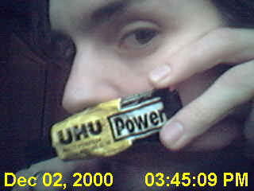
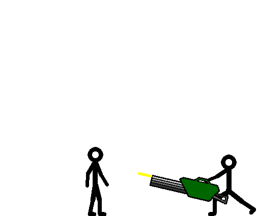
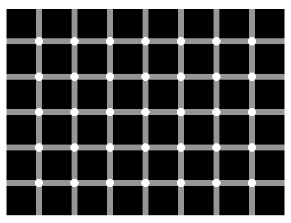

#25176 11 2004-07-20T15:32:49Z Azmilion can someone host it on a mirror?
i can't get to it on the metanet site
wait... i can't get on the entire metanet site.
can someone help
EDIT// It works now.
#25177 29 2004-07-20T15:37:32Z Azmilion i am 17
#31802 10 2004-10-12T14:53:59Z Azmilion i think it also would be cool for N to run up a wall for about 3 squares then jump off.
#31902 5 2004-10-13T13:17:48Z Azmilion i think it might have to do with checking the speed of N
if the speed is a certain value it can bacon through those platforms if it isn't it blocks him
#31974 7 2004-10-14T08:24:56Z Azmilion i think it might have to do with checking the speed of N
if the speed is a certain value it can bacon through those platforms if it isn't it blocks him
Heh, heh, he said "bacon".
Seriously, though, I'm sure that the one ways just have a simple code in terms of button presses. That's how the demos replay, and I'd imagine it has something to do with how the actual one ways work.
Stupid Keyboard!
but you are going bacon first on the way down so i was right in a way.
#31975 2 2004-10-14T08:30:15Z Azmilion maybe you are going to the edit mode first and then youn try to reset?
#31976 22 2004-10-14T08:43:42Z Azmilion \\POST KILLED//
#31978 7 2004-10-14T11:45:30Z Azmilion and if you wanted a different speed you could just edit it in the text file that N uses for the level
#31980 7 2004-10-14T12:52:14Z Azmilion 2-p mode would definatly screw up the whole idea behind N because the levels and the AI was made for 1 player so they'd have to re-write the whole thing
and it would make a PC lag like hell because of the massive amount of physics calculations you have to make then
#32044 77 2004-10-15T11:19:22Z Azmilion Gamecube
-LoZ:WW
-Super Smash Brothers Melee
-Godzilla Destroy all monsters Melee
-Megaman Network Transmission
-Super mario Sunshine
-Burnout 2
-LoZ: Ocarina of time(deluxe edition of Windwaker i got)
-LoZ:Ocarina of TIme,Master Quest
-Agressive Inline
-TimeSplitters 2
-13 other games(to lazy to list em all)
Sega Dreamcast
-powerstone 2
-Cannon Spike
(i have about 180 DC games(copied) but these are the only ones i play)
Sega Megadrive
-Lemmings 2
-Crash Test Dummies
(i have abou 20 other games to lazy to list em al)
NES(died 4 weeks ago)
-SMB1
-Duck Hunt
-SMB3
(i have about 15 NES games once again i am to lazy to list em al)
N64
-Micro machines 64
-Super Mario 64
-Mario Kart
-Super Smash Brothers(ah the memories)
(i have about 20 N64 games to lazy to list em al)
Xbox(borrowed)
-Fable
-Juiced
(only games i have)
PC
-Abuse
-RCT2:WW
-Warning Forever
-Robot Arena 2 Design and destroy
-1nsane
-Re-Volt
-GISH
-IL2:Forgotten Battles, The Ace Expansion
-Mechwarrior Mercs
-cilantro Fighter 2
-TRON 2.0
-Trackmania
-Postal 2
(not gonna list em all, have about 200 PC games)
#32058 33 2004-10-15T18:23:11Z Azmilion OK
-HC- Capt is definetily slow
#33486 280 2004-10-25T10:38:09Z Azmilion Silver Knights!!!
#33685 53 2004-10-26T14:41:14Z Azmilion it's obvious that this post is useless
#33686 54 2004-10-26T14:41:37Z Azmilion it's obvious tat this post is a double post!
#38550 5 2004-11-29T14:11:57Z Azmilion Oliver: do you love your work
me I do
Oliver: So do alot of others
me: do they
Oliver:So do alot of others,do they?
me: blah
Oliver: etc. etc.
my attempt to confuse it
they are dumb/dumb are dumb .
the left side is me the right side is him
are they/I reallycouldn't say for sure.
can i shoot you please/Your polite style is very nice. No I don't think that would be a very good idea.
you are bert/You think I am bert.
i know you are/How did you know?
because i programmed you/Good reason. Have you tried AIML?
no i haven't/ he just stopped responding here
3rd attempt
i am not W/I am glad to hear that you are not W.
who is a great man/Charlie Parker. :-)
no he is not/Why so negative? I see. not (WOW, ATTEMPT AT SARCASM)
i like nothing/A lot of people like that. Some people like it. But I think airplanes are cool.
#38753 450 2004-11-30T08:01:45Z Azmilion Rune,Die By the Sword,Neverwinter nights or Dungeon Siege
#38754 276 2004-11-30T08:06:58Z Azmilion /\...
>...
V...
#38768 40 2004-11-30T12:39:24Z Azmilion Do you like talking to me/no
why/because you are a fucknut
Good reason. Thanks and you are a delightful person too. Am I a fucknut? The Oliver series has a perfect operational record.
#38772 278 2004-11-30T12:47:42Z Azmilion /\hisspacebarisborken
>my spacebar works fine
\/he likes to bash his keyboard
(my earlierpost explaind:will not speak a tounge /so i didn't say anything)
#38773 690 2004-11-30T12:50:43Z Azmilion Fire Extuingisher saves the map by putting out te fire
(don't even think about saying hammer time again)
#38775 22 2004-11-30T12:57:17Z Azmilion Switzerland
#38777 19 2004-11-30T14:14:08Z Azmilion Tsukatsu Kablizzy and LV mixing that would make
Littlizzykatsu

that's a really awkward name
#38778 6 2004-11-30T14:16:48Z Azmilion Uh, Saucey? He said sprites.
@banana:That is a sprite Bananakid.
a sprite is a 2d image used in a videogame
@SaucySoldat:isn't that one of the Klik N Play default sprites??
#38887 91 2004-12-01T10:01:35Z Azmilion  <-- that's a link
<-- that's a link
i think that would have been a better smiley.
and about the link,That was insane man, My head still hurts.
#38888 8 2004-12-01T10:03:03Z Azmilion One sprite down, and I need maybe 15-30 more.
I'll just edit it to look cooler. Thanks SS.
what kind of sprite do you need?
weapon fire and boss planes and enemy's
because i made a shitload of sips for Jetmen once and imight have some left
#38892 36 2004-12-01T10:29:03Z Azmilion Amsterdam
#38893 13 2004-12-01T10:32:55Z Azmilion where do yuou people find those smiles.
#38900 10 2004-12-01T12:55:20Z Azmilion something like this?
it's a German WW2 Biplane
if you want more hit me up on MSN
making it a jpeg raped the details though
Attachment (lost): post-5-1101905720.jpg
#39113 14 2004-12-02T17:21:49Z Azmilion Tornado
Just PM me what you wan't and i'll make a few.
#39115 9 2004-12-02T17:39:40Z Azmilion That game looks awesome
is it worth it?
#39265 11 2004-12-03T08:19:57Z Azmilion K
but my DL speed is like 1 kb p s at the moment
just D/Led it wow
i already played the tokamakdemos but this game is awesome
#39797 472 2004-12-06T13:27:31Z Azmilion Gradius or R-Type
#39894 58 2004-12-07T10:30:38Z Azmilion Albany
#40193 83 2004-12-09T12:08:35Z Azmilion Newport
#41143 75 2004-12-14T13:31:45Z Azmilion 9/10
It's Link What else can i say
#41144 519 2004-12-14T13:32:44Z Azmilion Pandemonium ?
#42018 556 2004-12-21T09:50:50Z Azmilion above post is me forgot to login
#42233 45 2004-12-23T18:54:23Z Azmilion how about black and White mode??
Attachment (lost): post-8-1103828063.jpg
#42270 49 2004-12-24T08:35:58Z Azmilion *thinks about Black in White in motion*
youre right it would look horrid indeed
#42275 51 2004-12-24T11:24:55Z Azmilion as in change of colors?
i could just make it like the regular N only abit darker and lighter.
#42278 15 2004-12-24T11:37:03Z Azmilion N for Nintendo DS or Sony PSP.
that would be aweseome.t have the ability o play N everywhee anytime!
#45326 150 2005-01-10T12:34:21Z Azmilion Sorry
That was me.
#45327 1142 2005-01-10T12:35:24Z Azmilion Psycho Killer!
#45328 128 2005-01-10T12:38:09Z Azmilion YugoSlavia(or whatever the hell it si called)
#45337 101 2005-01-10T13:32:08Z Azmilion maniacs avvy.
10/10 HEADBASHING CRAZYNESS

#46101 26 2005-01-14T08:07:46Z Azmilion Smoking pot indeed isn't good for your health i admit that but it does work as a pain-killer and it was used as a medicine and it still is used as one in some countries.
in the country where i live pot is legal and it can be bought at special shops.
but youre only allowed to smoke it in your house or in that shop.
i sometimes smoke a joint.(about once a month)
#46102 8 2005-01-14T08:16:44Z Azmilion A.C youre not paying attention this is about the SIZE of the window itself so that insteed of 1024x768 it could be at 800x600 or lower.
#46103 180 2005-01-14T08:19:52Z Azmilion Roadkill
#46104 649 2005-01-14T08:21:27Z Azmilion Popeye or Super popeye for the NES
#46116 28 2005-01-14T13:38:56Z Azmilion Being stoned is better than being drunk because you still have a sence of reality.
#46408 652 2005-01-17T07:49:49Z Azmilion SCREENSHOT!
Attachment (lost): post-6-1105987590.jpg
#46444 291 2005-01-17T14:00:02Z Azmilion /\ bored
->likes apple-pie
\/Hates everything
#46447 79 2005-01-17T14:01:40Z Azmilion anyone ever notice that assmunky is a retard?
#46451 41 2005-01-17T14:10:02Z Azmilion i once made a simple handgrenade by mashing up rocket engines(the little hobbyist ones) and making a fuse out of one of those sparkly thingys.
we made a crater about 1.5 meters across in some farmers crop field
#46458 43 2005-01-17T14:17:31Z Azmilion tracco's full of shit.
if you smoked weed with bug-spray or whatever the hell you call it on it you would most likely instantly DIE because the crap is toxic as hell.
and you and youre home-grown pot.(as you claim to smoke)
isn't that easy to get in the U.S.A and then you need special equipment (heater lights and stuff)when you have a few plants it starts to smell like pot in your house and it will be noticed by other people and you get your ass arrested, also the power usage will skyrocket when using these lights also meanse that that will stand out, also note that the reason pot is mixed with tobacco is to lessen the effect of the drug so that you won't
A ) Pass out
B ) vommit yourself to death
it's a recreational drug, pfff not even a drug, it shouldn't be illeagal...because it CAN stop cancer
Marijuana is classified as a soft-drug.
And you said you didn't say that smoking weed made you safe from getting caner.
HIS, good weed, has NO cancer causing agents (unless it's one of those exotic buds) in it at all (the exotic ones aren't sold) it actually has CANCER FIGHTING AGENTS that's fucking correct shit faced christian morons, it can HELP PREVENT CANCER BECOMING ACTIVE AND SPREADING THROUGH THE BODY!
Pot doesn't prevent cancer.
it slows it down a bit.
and i think calling us Christian morons is anti-semithism or something.
wich is against the metanet policies.
@tracco:i laugh at you and your friends, smoking pot IS bad for your health and i also realise that,but ya only live once so i don't care that much.
Fly Spray? you think that's bad on weed.
at our (former) coffee-shops(thats what they are called here,basically a weed store) one of the people there used to sprinkle the crap with Cocaine. so don't bitch about fly spray please
@suki:GO SUKI!,GO SUKI!,GO SUKI!
#46463 14 2005-01-17T14:33:24Z Azmilion USE THE DAMN SEARCH BUTTON OR READ THE PINNED TOPIC AT THE TOP OF THIS SUB-FORUM.
weapons have been suggested but there was an overall NO about the use of them.
#46467 5 2005-01-17T14:36:25Z Azmilion @assmunk:it's a good thing i don't know where you live.
@KC: BAN THE F*CKER
#46470 7 2005-01-17T14:39:53Z Azmilion where talking about FLASH MX here(a animation and actionscript program)
NOT PAINT
#46472 8 2005-01-17T14:41:47Z Azmilion a tacctical nuke can.
or i could just trace your IP and get your home adress.
#46477 91 2005-01-17T14:45:45Z Azmilion yeah right
and now prove it
#46601 45 2005-01-17T20:49:09Z Azmilion damn.
that means he can't be banned for that.
anyways, i don't believe in fairy-tales.
but i don't wanna start the whole religion discussion again
#46602 48 2005-01-17T20:52:27Z Azmilion i really hope he stays away now.
annoying little spammer.
#46666 657 2005-01-18T07:19:59Z Azmilion Wrong,Wrong and Wrong.
it's not a shooter.
#46667 189 2005-01-18T07:21:07Z Azmilion Puddin
#46668 101 2005-01-18T07:22:15Z Azmilion does anyone notice the last few posts where WAAAAAY off-topic
#46673 659 2005-01-18T08:34:06Z Azmilion for PC?
i don't think so!
(i purposley made it look like a GTA scene)
#46674 191 2005-01-18T08:34:50Z Azmilion dictionary
#46676 2 2005-01-18T08:56:22Z Azmilion Hamburger.they be t3h t4styn3ss.
meatnet? worst typo ever!
fly, I fall, without my wings. I guess I need you baby. Er... wait, enough Britney Spears now.
why the hell was that in your post?
#46677 661 2005-01-18T08:58:55Z Azmilion Hint#1:it's a racing game.
#46679 663 2005-01-18T09:12:06Z Azmilion
is this fluffy?
#46684 21 2005-01-18T09:18:18Z Azmilion NICE.
i really like all your N-game art
#46692 666 2005-01-18T11:17:33Z Azmilion Jer(K) got it right!
#46695 4 2005-01-18T11:53:20Z Azmilion no i won't
#46696 193 2005-01-18T11:54:28Z Azmilion Britney Spears
#46701 195 2005-01-18T12:30:59Z Azmilion Lady Di
#46706 668 2005-01-18T14:18:25Z Azmilion yesh
#46859 294 2005-01-19T08:03:16Z Azmilion /\

->

\/
@makron:i'm not a newb i just haven't got time to make a proper avvy yet
#46999 675 2005-01-20T10:00:56Z Azmilion Metal Marines?
#47000 297 2005-01-20T10:04:09Z Azmilion /\diputs thiw si
->krow ta si
\/eson sih htiw type will
#47134 680 2005-01-21T08:38:41Z Azmilion Terranigma
Soulblazer
Chrono Trigger
#47266 2 2005-01-22T13:13:20Z Azmilion 1)learn proper english grammar and spelling.
2)read the manual that came with the game.
#47344 687 2005-01-22T18:26:45Z Azmilion Warcraft 3.
is that a screen from the Main-menu?
#47539 689 2005-01-23T17:25:31Z Azmilion i pass on my turn to the nex poster!
#47541 9 2005-01-23T17:32:23Z Azmilion Pyromaniacal
#47894 52 2005-01-25T08:19:29Z Azmilion that works even better with instant-coffee(the powder type)
and gasoline+styrofoam makes pretty goood napalm
#48054 28 2005-01-26T09:12:17Z Azmilion i am Ambidexterous.
well actually i'ma lefty but i forced myselft to be a righty and now i am a right-lefty.
and i can't write for crap with left nor right
#48100 700 2005-01-26T15:32:41Z Azmilion MS-DOS on crack
#48956 711 2005-02-01T15:48:45Z Azmilion TRACKMANIA!
Attachment (lost): post-6-1107273211.jpg
#48957 2 2005-02-01T15:54:54Z Azmilion @Tanya: WTF??
this is about this forum or N not about AA higway to the reich or whatever you wanna call it.
don't go to random forums asking random things
#49072 713 2005-02-02T16:38:11Z Azmilion STUNTS 4D
might also be released under a different name
whoever wants this turn can claim it
#49625 723 2005-02-07T19:53:43Z Azmilion Kid Chameleon?
#49626 2 2005-02-07T19:55:46Z Azmilion search for a .sol file on your computer,
it should be named nv13b_userdate.sol or something like that.
DELETE THAT FILE
and reboot N
#50381 42 2005-02-14T12:20:37Z Azmilion #52056 29 2005-02-28T20:08:09Z Azmilion #52560 113 2005-03-04T17:50:02Z Azmilion Picture of me.
uber-crappy quality.
YES THOSE ARE RED PANTS!
(no thats not my room, i am at a friends house now)
Attachment (lost): post-20-1109958602.jpg
#52574 10 2005-03-04T21:17:24Z Azmilion my freakiest dream/NIGHTMARE was
i entered a house and it was all boarded up. i try to leave but the door is gone,then i turn to the windows they are gone to.then aroudn me white corpses start appearing with no eyes.(freaky i know)then blood start flooding from their eyes and in the end of the dream i drown in the blood.
i consider that a pretty fucked up nightmare.
#52702 2 2005-03-05T15:31:21Z Azmilion NO THERE ISN"T
but there is however a funtion in N called HIGHSCORE LIST or something with wich you can view the highscores and click them for re-plays
#53204 38 2005-03-08T14:18:04Z Azmilion must....have.....PASSWORD!
i don't like the fact that we are being excluded from something.
#53343 86 2005-03-09T08:39:40Z Azmilion What happened to the forum?
itsa gone!
#53355 14 2005-03-09T13:53:18Z Azmilion Currently i play;
Runescape(free online RPG thing)
Metroid Prime 2:Echoes (looking for the last set of keys)
FarCry
N(not that much as i used to)
and lots of other GameCube-games
#53357 1606 2005-03-09T13:58:50Z Azmilion Acid Will burn away the Ajax and the book and the ink
#53358 790 2005-03-09T14:00:01Z Azmilion Guilty Gear : Isuka?
i remember seeing something like that in that game
#53659 2 2005-03-11T15:05:59Z Azmilion why would we wan't to do that
BECAUSE WE CAN!
looks like it is working!
#53662 14 2005-03-11T15:45:43Z Azmilion HELL YEAH
great that you won the award!
congratulations!
#54047 3 2005-03-13T14:39:03Z Azmilion actually it is normal
and i heard the linux version just runs like absolute crap because it is a W.I.P(work in prgress)
#54048 12 2005-03-13T14:40:14Z Azmilion i call mine Crash
#54049 11 2005-03-13T14:42:35Z Azmilion how about a numbering system
the player who made the last map picks the next person and PMs him the code to be put in the map description
when the map is done the person who picked the other one posts the code so the players know wich map to check?
#54055 10 2005-03-13T15:21:10Z Azmilion Netherlands
THE ONLY LEGAL PLACE TO SMOKE ZEE GANJA!
seems size -7 text now is invisible!
#54238 5 2005-03-15T12:02:09Z Azmilion breaking the habit - Linkin park
#54239 31 2005-03-15T12:04:43Z Azmilion and the wait will be worth it
so that mare and raigan can take over the......
entertain us with a great game
Fixzord the typo
#54252 44 2005-03-15T15:37:28Z Azmilion I was just going to suggest the same thing. ImageShack.us
By the way, AtomicShadow, that skiing picture looks pretty good. Was there a person where the ninja is now?
he got zapped into nothingness?
#54265 8 2005-03-15T19:42:51Z Azmilion Hee hee. I have an Xbox, but I only got it to play Prince of Persia. That's the only game I have.

i have a game-cube. the reason i got it?
i am a console-gamer(GO AND HATE ME FOR IT)who likes to play a PC game now and then,that's also why i have about 10 PC games and about 50-60 console games in total(NGC,N64,Megadrive and NES)
i only see one reason to get an Xbox
it's a good defence a against burglars because it is a potential murder weapon.
i once took a smash from an Xbox(odd situtaion,WON'T explain) and it fucking hurt.
#54269 47 2005-03-15T20:10:36Z Azmilion I know how to use image shack, guy. Fine... I'll do it...
I hope this worked... Hmm... It says, "Sorry, dynamic pages in the [IMG] tags are not allowed.
Oh! I got it:
images [/img]
that's actually not that uberbad
the coloration is just a bit off
#54544 14 2005-03-17T18:57:41Z Azmilion if you know who did it steal his lap-top
#54679 11 2005-03-18T18:05:45Z Azmilion Your pirate name is:
Black William Flint
Like anyone confronted with the harshness of robbery on the high seas, you can be pessimistic at times. Like the rock flint, you're hard and sharp. But, also like flint, you're easily chipped, and sparky. Arr!
#54680 3 2005-03-18T18:08:29Z Azmilion i once threw peanuts at my teacher out of boredom
the he sent me out.
then i hacked into the school network and remote-rebooted all the PC's at once XD
#54891 16 2005-03-19T22:17:22Z Azmilion Lock Ness!
SimsalaLocked!
nope that ain't working
Keron!
#2271 1 2005-03-22T15:06:43Z Azmilion i got the idea for this contest while whatching the movie"The Cube" i really liked the awesomeness of it's traps. i had an idea for a competition where one person whold make a hypercube map with traps and everything and then the first person to complete it gets the next turn to make the next hypercube. the maps will all be using the same template in wich only the ninja and the exit are at fixed locations the rest is up to you.
if anyone likes this idea i'll post the template soon.
#55344 293 2005-03-22T15:13:19Z Azmilion i can't even sort out the blizz his riddles.
DAMNIT!
#55355 4 2005-03-22T16:06:36Z Azmilion @brickman:hypercube is about a few people who wake up in a giant cube that consists of smaller cubes some of these cubes are safe and others are trapped.
no-one actually know where they are or why they are there but together they will find a way out.i recommend Cube and Hypercube to anyone who likes seeing people get caught in traps
@iangb:actually i am using none of those
i made a base template that consis't of a 4 by 5 room system in wc you are free to do what you want!
this is an example cube wich is actually one of my first attempts at map making
Hypercube 1
Hypercube template
if enough people want to play this game i think i will redefine the rules a tiny bit.
i noticed some people complain to me(over MSN and on NUMA) i have hidden thwumps
there are 2 rooms with hidden thwumps in them and you can either like that or not.
theyre supposed to be traps so wich means:HIDDEN. have you ever seen a trap before you fell in it?NO! that's the whole fucking point behing this map damnit. to give people some inspiration for their own Cube maps
#55505 21 2005-03-23T10:58:31Z Azmilion n_a ran at 30 ms/f and 100% CPU usage
n_b ran at about 30-40 ms/f and about 80% CPU usage
n_c ran the same as n_a
n_d ran the same as n_a
i have a 1.5 Ghz AMD athlon and 256 MB DDR RAM
i don't exactly know the speed of the RAM
#55511 8 2005-03-23T13:16:33Z Azmilion depends on what Class of network they are on if i am right
but yeah the first 2 or 3 can be fixed
#55745 8 2005-03-24T15:08:03Z Azmilion i once drew an animation on my note-block so that when you flipped the pages you would see an animation. it was the fun!
#56710 830 2005-03-28T16:36:30Z Azmilion Command & Conquer: Tiberium Dawn (the firstC&C game)
#56977 836 2005-03-29T16:01:54Z Azmilion Medieval: Total War
DANG
#57091 15 2005-03-30T09:57:03Z Azmilion most time played is definetly on my Cube
most played game ATM
Super Smash Brothers Melee
and
Phantasy Star 1&2
#2358 1 2005-03-30T11:39:03Z Azmilion aspereta is a fun online game wich is made in an anime style,it's an MMORPG and it is a really socializing game with wich i mean you talk to other people a lot.
i realy suggest you check it out.it's free!
CLICKY ME!
if you want to talk to me in-game my ingame name is Azarun
#57109 2 2005-03-30T13:15:23Z Azmilion could've been worse you could have not slept in lets say.....3 days
soooo tired
#57139 3 2005-03-30T18:00:38Z Azmilion MUST HAVE 1.4.
nuff said
#57142 5 2005-03-30T18:10:20Z Azmilion it'd better be released tomorrow.or else i might actually have to DO something at school
#57149 8 2005-03-30T20:45:24Z Azmilion i think am staying up fr the release of this game its 11 PM here now
#57152 10 2005-03-30T20:55:36Z Azmilion OMFG
that would make an awesome sig Quote
but i am againsta collecting em for now so i won't claim it
#57301 32 2005-03-31T07:58:21Z Azmilion must have N 1.4
this is nto good for my school-work
#57310 35 2005-03-31T09:40:28Z Azmilion GRAMMAR TERRIBLE IS NOT! ahum!
#57311 12 2005-03-31T09:42:49Z Azmilion HELL NO!
searh nazi
#57312 1958 2005-03-31T09:43:36Z Azmilion NUKES solve everything
#57421 18 2005-03-31T21:21:11Z Azmilion Hell Yeah!
aspereta?
#57423 14 2005-03-31T21:22:16Z Azmilion granted but you get sucked into a time-loop wich makes you live the moment over and over.
I wish there wasn't any violence in the world
#57528 2 2005-04-01T09:40:29Z Azmilion *POST THUMPERIZED*
#57531 4 2005-04-01T09:53:00Z Azmilion FUCK!
fell for it
well.....uhm......geez......
damnit if this is a joke it ain't fucking funny.
#57533 34 2005-04-01T10:00:47Z Azmilion Granted but just before the meeting she has an "operation"
i wish i could understnd the Y&BB Riddles N stuff
#58295 4 2005-04-04T08:51:54Z Azmilion dude,
try NOT to spam
you could have like made some usefull posts
#58499 842 2005-04-05T08:43:21Z Azmilion it could be terranigma.
#58508 2 2005-04-05T10:46:01Z Azmilion 1.kill the sig's length it's ridiculous
2.read the *EDIT'D!* manual
#58531 6 2005-04-05T16:39:24Z Azmilion and yo should really shorten your sig.
it shows up HUGE for me
#58534 62 2005-04-05T17:05:15Z Azmilion #58568 7 2005-04-05T20:34:31Z Azmilion wow.....i almots reached it then i kinda wrecked my shoulder...*ouch*
#58680 95 2005-04-06T05:23:47Z Azmilion Hell Yeah!
bastard Swords?
#58681 8 2005-04-06T05:25:05Z Azmilion ^^That's why^^
#58683 34 2005-04-06T05:26:28Z Azmilion its hard for me to get to sleep because i suffer from a disorder which always makes me feel like im going to throw up.With this combined with my phobia of vommiting its pretty darn hard to get to sleep. 
that sucks man
woohoo haven't slept tonight!
played to much Timesplitters uture Perfect.
#58881 16 2005-04-07T20:37:04Z Azmilion Shurg....
sounds like Zerg
Go on! my pet Zergling go and eat mr. de castaleg
#59034 855 2005-04-08T15:47:32Z Azmilion Edit: If you wanna see the list Azmillion provided, click "quote" and look at it that way. Post was way too big.
April 12, 2005 Dead to Rights II Namco Action
April 12, 2005 Jade Empire Microsoft RPG
April 12, 2005 Midnight Club 3: DUB Edition Rockstar Games Racing
April 12, 2005 Virtual Pool Tournament Edition Global Star Board
April 14, 2005 Still Life The Adventure Company Adventure
April 18, 2005 Unreal Championship 2: The Liandri Conflict Midway Shooter
April 18, 2005 WWE WrestleMania 21 THQ Wrestling
April 19, 2005 Psychonauts Majesco Action
April 25, 2005 Area 51 Midway Shooter
April 26, 2005 Motocross Mania 3 Global Star Racing
April 26, 2005 Predator: Concrete Jungle Vivendi Universal Games Action
April 2005 Creature Conflict: The Clan Wars Cenega Action
May 1, 2005 Resonance *TBA Action RPG
May 3, 2005 25 To Life Eidos Interactive Shooter
May 3, 2005 Advent Rising Majesco Action
May 3, 2005 Capcom Fighting Evolution Capcom Fighting
May 3, 2005 Darkwatch *TBA Shooter
May 3, 2005 Forza Motorsport Microsoft Racing Simulation
May 3, 2005 Pariah Groove Games Shooter
May 5, 2005 Star Wars Episode III: Revenge of the Sith LucasArts Action
May 10, 2005 Juiced THQ Racing
May 17, 2005 Outlaw Tennis Global Star Sports
May 17, 2005 Sid Meier's Pirates! Atari Strategy
May 24, 2005 Destroy All Humans! THQ Action Adventure
May 26 2005 Madagascar Activision Action
May 2005 MotoGP 3 THQ Racing
May 31, 2005 Digimon World 4 Bandai Action RPG
June 1, 2005 Medal of Honor European Assault Electronic Arts Shooter
June 1, 2005 Tom Clancy's Rainbow Six: Lockdown Ubisoft Shooter
June 6, 2005 West Coast Choppers Global Star Racing
June 7, 2005 Grand Theft Auto: San Andreas Rockstar Games Action Adventure
June 14, 2005 FlatOut Empire Interactive Racing Action
June 15, 2005 King of Fighters 2002 & King of Fighters 2003 SNK NeoGeo Fighting Compilation
June 21, 2005 Conker: Live & Reloaded Microsoft Shooter
Spring 2005 Bulletproof Vivendi Universal Games Action
Late Spring 2005 King of Fighters: Maximum Impact SNK NeoGeo Fighting
June 30, 2005 Metal Slug 4 & Metal Slug 5 SNK Playmore Shooter
Q2 2005 S.C.A.R. - Squadra Corse Alfa Romeo Black Bean Racing
Q2 2005 The Suffering: Ties That Bind Midway Action
Q2 2005 Total Overdose SCi Entertainment Group Action
Q2 2005 Worms 4: Mayhem Codemasters Strategy
July 2005 187 Ride or Die Ubisoft Racing Action
August 8, 2005 Madden NFL 2006 Electronic Arts Sports
Summer 2005 Dreamfall: The Longest Journey Funcom Adventure
August 23, 2005 Fantastic Four Activision Action
Summer 2005 America's Army: Rise of a Soldier Ubisoft Shooter
Summer 2005 Big Mutha Truckers 2 THQ Racing
Summer 2005 Stacked Myelin Media Card
Summer 2005 The Incredible Hulk: Ultimate Destruction Vivendi Universal Games Action
Summer 2005 Tom Clancy's Ghost Recon 2 Mission Pack [working title] Ubisoft Shooter
Summer 2005 World War II Squadron [working title] Ubisoft Flight
September 13, 2005 Batman Begins Electronic Arts Action
September 2005 Aeon Flux Majesco Action
Fall 2005 Call of Duty sequel [untitled] Activision Shooter
Fall 2005 Crash Tag Team Racing Vivendi Universal Games Racing Action
September 2005 Far Cry Instincts Ubisoft Shooter
Q3 2005 Marc Ecko's Getting Up: Contents Under Pressure Atari Action Adventure
Fall 2005 Marvel Nemesis: Rise of the Imperfects Electronic Arts Fighting
Fall 2005 Midway Arcade Treasures 3 Midway Racing Compilation
Fall 2005 Nicktoons THQ Action
Fall 2005 Pac-Man World 3 Namco Action
September 2005 Scooby-Doo! Unmasked THQ Action
September 2005 Spartan: Total Warrior SEGA Action
Fall 2005 SpongeBob SquarePants Multiplayer [working title] THQ Party
Fall 2005 Tak 3 THQ Platformer
Fall 2005 The Chronicles of Narnia: The Lion, The Witch and The Wardrobe Buena Vista Games Action Adventure
Fall 2005 The Godfather Electronic Arts Action Adventure
Fall 2005 The Incredibles 2 [working title] THQ Action
October 3, 2005 Operation Flashpoint Codemasters Shooter
October 2005 Gauntlet: Seven Sorrows Midway Action
October 2005 Tim Burton's The Nightmare Before Christmas: Oogie's Revenge Capcom Action Adventure
Fall 2005 TimeShift Atari Shooter
Q3 2005 Without Warning Capcom Action
November 1, 2005 Battlefield 2: Modern Combat Electronic Arts Shooter
November 2005 Harry Potter and the Goblet of Fire Electronic Arts Action Adventure
Fall 2005 Battlefield 2: Modern Combat Electronic Arts Shooter
Fall 2005 Indigo Prophecy Atari Adventure
November 2005 Retribution *TBA Shooter
November 2005 Star Wars: Battlefront 2 LucasArts Shooter
December 14, 2005 King Kong Ubisoft Action
Q4 2005 AND 1 Basketball Ubisoft Sports
Q4 2005 Brothers in Arms [untitled sequel] Ubisoft Shooter
TBD Dark Sector *TBD Shooter
Q4 2005 James Bond 007: From Russia With Love Electronic Arts Action
Q4 2005 King Kong Ubisoft Action
Q4 2005 Prince of Persia 3 [working title] Ubisoft Action
Q4 2005 Shadow the Hedgehog SEGA Action
Q4 2005 Stargate SG-1: The Alliance JoWood Productions Adventure
Q4 2005 The Matrix: Path of Neo Atari Action
December 2005 The Warriors Rockstar Games Action
Q4 2005 Tom Clancy's Ghost Recon 3 Ubisoft Shooter
Q4 2005 Tom Clancy's Ghost Recon 3 Ubisoft Shooter
Late 2005 Ty the Tasmanian Tiger 3 Platformer
TBA 2005 9 Worlds *TBA Action Adventure
TBA 2005 Animaniacs: Great Hunt Ignition Entertainment Action
TBA 2005 Apocalyptica Konami Action
TBA 2005 Armada 2: Star Command Metro 3D Action RPG
TBA 2005 Automaniacs *TBA Action
TBA 2005 Battlestations: Midway THQ Action
TBA 2005 BioWare RPG [Untitled Project] *TBA RPG
TBA 2005 Black *TBA Shooter
TBA 2005 Breed CDV Shooter
TBA 2005 Burnout Revenge Electronic Arts Racing
TBA 2005 Call of Cthulhu: Beyond the Mountains of Madness *TBD Adventure
TBA 2005 Call of Cthulhu: Dark Corners of the Earth Bethesda Softworks Adventure
TBA 2005 Carmageddon 2K Games Racing Action
TBA 2005 Charlie and the Chocolate Factory Global Star Action
TBA 2005 Chicken Little Buena Vista Games Action
TBA 2005 Citizen Zero *TBA Shooter
TBA 2005 Close Combat: Red Phoenix Gathering Strategy
TBA 2005 Combat Elite: WWII Paratroopers *TBA Action
TBA 2005 Commandos Strike Force Eidos Interactive Shooter
TBA 2005 Crusty Demons Freestyle Moto-X *TBA Racing
TBA 2005 Deadlands *TBD Action Adventure
TBA 2005 Delta Force - Black Hawk Down NovaLogic Shooter
TBA 2005 Demon Warrior O~3 Entertainment Action
TBA 2005 DroneZ Metro 3D Action
TBA 2005 Dungeon Lords DreamCatcher Interactive Action RPG
TBA 2005 Enclave II *TBA Action Adventure
TBA 2005 Falcone: Into The Maelstrom Virgin Interactive Shooter
TBA 2005 Fallout [Untitled New Project] Interplay RPG
TBA 2005 Fate of Ages *TBA RPG
TBA 2005 Fear & Respect Midway Action Adventure
TBA 2005 Fear Factor: Unleashed ARUSH Entertainment Action
TBA 2005 Ford Mustang: 40th Anniversary Edition Take-Two Interactive Racing
2005 Full Spectrum Warrior 2 THQ Simulation
TBA 2005 Funkydilla Zoonami Music
TBA 2005 Get On Da Floor Eidos Interactive Music
TBA 2005 Get On Da Mic Eidos Interactive Music
TBA 2005 Ghouls 'N Ghosts Online Capcom Action Adventure
TBA 2005 Gothic Xicat Interactive Adventure
TBA 2005 Grand Prix 4 Infogrames Racing
TBA 2005 Guilty Gear Isuka Sammy Corporation Fighting
TBA 2005 Half-Life 2 *TBD Shooter
TBA 2005 He-Man: Defender of Grayskull TDK Mediactive Action Adventure
TBA 2005 Heroes of the Pacific Encore Software (1) Flight Action
TBA 2005 Highlander SCi Entertainment Group Action
TBA 2005 Hollow Action
TBA 2005 Hoyle Majestic Chess Vivendi Universal Games Board
TBA 2005 Internal Pain *TBA Action
TBA 2005 Jane's Attack Squadron Xicat Interactive Flight Simulation
TBA 2005 Jaws Unleashed Majesco Action
2005 Jimmy White's World Tour Ignition Entertainment Board
TBA 2005 Just Cause Eidos Interactive Action
TBA 2005 Kao the Kangaroo Round 2 JoWood Productions Action
TBA 2005 Kingpin [Untitled New Project] Interplay Action
TBA 2005 KnightBlade - Final Flight *TBA Action
TBA 2005 Knights of the Temple TDK Action Adventure
TBA 2005 L.A. Rush Midway Racing
TBA 2005 Lamborghini FX Titus Racing
TBA 2005 Lobo Kemco Action Adventure
TBA 2005 Maxxis Ultimate ATV Metro 3D Racing
TBA 2005 Metallica: The Game Vivendi Universal Games Action
TBA 2005 Monster Jam 3 Ubisoft Racing
TBA 2005 Mortal Kombat: Shaolin Monks Midway Fighting Action
TBA 2005 Motorsiege: Warriors of Primetime *TBD Action
TBA 2005 Mutant Chronicles Online *TBA Strategy
TBA 2005 Mythos: The Demon Hunters Variant Interactive Action
TBA 2005 Nightmare Creatures 3: Angel of Darkness Ubisoft Action
TBA 2005 Over The Top *TBA Racing
TBA 2005 Painkiller DreamCatcher Interactive Shooter
TBA 2005 Perfect Dark Zero Microsoft Shooter
TBA 2005 Plague of Darkness Namco Action Adventure
TBA 2005 Pool Paradise: International Edition Ignition Entertainment Sports
TBA 2005 Pool Shark 2 Zoo Digital Publishing Sports
TBA 2005 Pumpkin Man Metro 3D Action
TBA 2005 Rally Trophy JoWood Productions Racing
TBA 2005 Raze's Hell Majesco Shooter
TBA 2005 Risk Infogrames Strategy
TBA 2005 Rocket Power: Zero Gravity Zone THQ Sports
TBA 2005 Rogue Trooper SCi Entertainment Group Action
TBA 2005 Sabotage 1943 Shooter
TBA 2005 Sahara *TBA Action
TBA 2005 Scarface Vivendi Universal Games Shooter
TBA 2005 Serious Sam 2 *TBA Shooter
TBA 2005 Shadow of the Sun Adventure
TBA 2005 Shayde: Monsters V. Humans Metro 3D Action
TBA 2005 Shenmue III SEGA Adventure
TBA 2005 Shoot to Kill Codemasters Shooter
TBA 2005 Sniper Elite: Berlin 1943 Wanadoo Edition Shooter
TBA 2005 Spider-Man Classic Activision Action Adventure
TBA 2005 StarCraft: Ghost Blizzard Shooter
TBA 2005 State of Emergency 2 BAM! Entertainment Action
TBA 2005 Stubbs the Zombie in "Rebel without a Pulse" Aspyr Action
TBA 2005 Sudeki 2 *TBA RPG
TBA 2005 Tech Deck: Bare Knuckle Grind *TBA Sports
TBA 2005 The Chronicles of Riddick 2
TBA 2005 The Lord of the Rings (2005) Electronic Arts RPG
TBA 2005 The Movies Activision Simulation
TBA 2005 The Mummy Hip Interactive Action Adventure
TBA 2005 The Mummy: The Animated Series Hip Interactive Action Adventure
TBA 2005 The Roots Cenega Action RPG
TBA 2005 Times of Trouble Wanadoo Edition Action
Q4 2005 TOCA Race Driver 2006 Codemasters Racing
TBA 2005 Top Angler: Real Bass Fishing Xicat Interactive Hunting
TBA 2005 Twin Caliber Majesco Shooter
TBA 2005 Ultimate Blade of Darkness Codemasters Action
TBA 2005 Ultimate Spider-Man Activision Action
TBA 2005 Vijay Singh Golf [untitled] Ubisoft Sports
TBA 2005 Virtua Cop 3 SEGA Shooter
TBA 2005 Vultures CDV Action
TBA 2005 WarDevil -- Unleash the Beast Within Action
TBA 2005 Wars & Warriors: Joan of Arc Enlight Action
TBA 2005 Wave Rally Eidos Interactive Sports
TBA 2005 World Championship Snooker 2005 SEGA Board
TBA 2005 World Racing 2 *TBA Racing
TBA 2005 Xbox Media Center Extender Kit. Microsoft Other
TBA 2005 Xbox Video Chat Kit Microsoft Party
TBA 2005 Xyanide Playlogic International Action
Q1 2006 The Living Dead [George Romero Project] Hip Games Action
Early 2006 Killing Day Ubisoft Shooter
Q1 2006 211 *TBA Action
Q1 2006 Tom Clancy's Splinter Cell 4 Ubisoft Action Adventure
Q1 2006 Tom Clancy's Splinter Cell 4 Ubisoft Action
Q3 2006 Tracer *TBA Action
Fall 2006 Halo 3 Microsoft Shooter
Holiday 2006 Spark next-gen project [untitled] Atari
TBA 2006 6GUN *TBA Shooter
TBA 2006 AFL 2006 Electronic Arts Sports
TBA 2006 Dirty Harry Warner Bros. Interactive Action
TBA 2006 DOAX 2 (Working Title) Tecmo Sports
2006 Family Guy Take-Two Interactive Action Adventure
December 31, 2006 Huxley Webzen Shooter
TBA 2006 Jade Empire 2 (Unnanounced) *TBA RPG
TBA 2006 NeverSoft First-Person Shooter [untitled project] Activision Shooter
TBA 2006 Oddworld Fangus Majesco Action Adventure
TBA 2006 Reservoir Dogs 2K Games Action Adventure
TBA 2006 Roll Call SCi Entertainment Group Shooter
TBA 2006 The Darkness Majesco Action
December 31, 2006 The Punisher 2 THQ Shooter
TBA 2006 Tomb Raider: Legend Eidos Interactive Action Adventure
TBA 2006 Tomb Raider: Legend Eidos Interactive Action Adventure
Spring 2007 ShadowClan *TBA Action
TBA 2006 / 2007 DICE Project 1 [untitled] Electronic Arts
TBA 2006 / 2007 DICE Project 2 [untitled] Electronic Arts
TBA 2006 / 2007 DICE Project [untitled] Electronic Arts Action
TBA 2007 Spider-Man 3 Activision Action Adventure
its bound to be in there somewhere XD
#59035 103 2005-04-08T15:52:51Z Azmilion Hell no (that's mean and i am nice.... sort of)
Beastiality
(seriously all the abd things except this one where taken)
#59603 213 2005-04-11T09:48:10Z Azmilion Granted but now you can only speak backwards and no-one can understand you
I wish i knuw what to Wish for
#59916 77 2005-04-13T17:53:15Z Azmilion #59993 241 2005-04-14T10:11:50Z Azmilion Granted but now they are standin in front of you.
I wish i could make more wishes
#60121 2 2005-04-15T18:44:20Z Azmilion The idea for the level came from me and SQD just worked it out.
We think it is a very good level and we are looking forward to hearing your comments and suggestions.(the level file will be hosted at request because it is kinda big)
#2555 1 2005-04-15T22:06:08Z Azmilion What is Dungeon Siege?
-an fantasy RPG that takes place in medieval time with a bit of magic and technogoly(goblin weaponry) in it.
-an 3D Rpg with great graphics and animations and stuff
- lots of variety in the enemy's(you'll be fighting robot goblins and dragons to name a few)
- lots of different weapons(did i hear someone say Minigun?)
- a game that is very fun to play with a few people.
that and it is a cheap game.(i payed about 30 bucks for it with the expansion)
Linkage
Expansion Linkage
I've been playing lot's of Dungeon Siege lately and i was wondering if people from this forum play it too.i recently found my old savegame of my siegemaster sp o decoded to start playing again.
if anyone plays Dungeon Siege on this forum we could play some games together or something.
yeah i know this one of those typical chaos posts, sorry i am half asleep.
#60157 19 2005-04-15T22:18:09Z Azmilion wasn't it from the game Zero WIng?
#60158 2 2005-04-15T22:20:45Z Azmilion its not a good idea to use an animation as a background.
it WILL annoy you after some time
#60519 6 2005-04-18T13:43:04Z Azmilion Ooh ooh! I play Dungeon Siege. The next one come out 4 days before my birthday (august 5th) and I hope someone in my family will give it to me.
Azmilion, have you found the chicken gun yet? It is the most hillarious thing in the world. It launches chickens.
To get it... hmm, just PM me if you want to know. I won't post such a huge process in a post.
I got the Chicken gun using the method that's really long and boring(with the help of another player that is).
#60674 4 2005-04-19T05:20:27Z Azmilion Yeah, just grab more gold on early levels to survive later ones. And be happy it doesn't carry over from episodes.
that would make an awesome secret mode though
#60682 891 2005-04-19T08:32:00Z Azmilion the second one Is Wrecking Crew and the first one i don't know
#60683 3 2005-04-19T08:48:02Z Azmilion i submitted about 5 maps and most of them are rated, i appreciate that people rate them HONESTLY.
#60870 5 2005-04-20T06:52:35Z Azmilion human.....
i despise humanity
#60930 901 2005-04-20T16:51:14Z Azmilion EDIT'D i don't think i wan't you guys to see this
#60932 8 2005-04-20T16:53:33Z Azmilion but _thoes_ kind of shows are mostly the best shows that are on.
they are filled with Po..Tatoes.
#60994 14 2005-04-20T20:08:49Z Azmilion Ever had one of those nights where you're tired like crazy and yet wide awake? That's how I was feeling. I tried deliberately staying up, to see how long it would be before I fell asleep. A looong, loooooooong time. I don't know how I ever managed to drift off... maybe I didn't!
i once had that for 3 day's straight and then i just collapsed in my chair.
the reason is ofcourse a big-ass LANparty.
#60998 11 2005-04-20T20:25:20Z Azmilion I don't believe in a god because it hasn't been SCIENTIFICALLY proven that he exists.once people have proof that he actually exists/ has existed, i might actually consider the existence of god a possibility
#61004 3 2005-04-20T20:53:34Z Azmilion i once had this compilation pic of bush wiht al kinds of monkey faces and stuff
it was hilarious.
#61105 17 2005-04-21T12:06:24Z Azmilion i once did a IQ test when i was like 15 or something and i got a 130....
i declare this threadHIJACKED
#61675 196 2005-04-23T22:23:51Z Azmilion One day, maximo and his ghetto were beaten up by Grandma's Cookies and Atramentis, who just watched Zoolander, an outrageously difficult movie about male models who just happened to be floating in a supernova while he sucked on a big piece of scrap that was blue. I found that things were looking very, very stupid. Maniac observed this from afar, without any idea about what's for lunch. "Beer, drugs, and glass," Homer thought. "Mmmmm... broken glass."
*drools on shirt*
Rams win 49 - what the f***? Another Rams touchdown in the opponent's endzone! 55 to 21! AHH! James has eaten too many sugar coated-sandwiches. A moment later, Malachite bursts into flames. He ate Brickman's fat and spontaneously combusted into James the Big Purple Dinosaur! Then 654321 died, he couldn't count that stupid child.
After eleven burritos, a twelth burrito that went Dennis stood before the mighty king of deer and buffalos whose name was KeronCyst (no relation). Then the King sang "Spam Song" with his wife who was a great big carton of condensed milk. A bellowing voice bellowed about bellows and their effect on Uri Geller, the world's biggest nigerian money scammer. Suddenly nevermore's donkey turned inside-out from lack of vitamin C which is healthy. Parrots suddenly go extinct
#61677 38 2005-04-23T22:26:59Z Azmilion Google-Moogleys AzMiLion
Guess this name is Unique
79 Pages of results.
Thats just disturbing
#61681 64 2005-04-23T22:38:48Z Azmilion Heh, I like this one.
ROFL
i noticed this name G. Neukum
wich translated in to dutch kinda means G. F*ck em
#63591 37 2005-05-03T16:12:14Z Azmilion tried it too.
and it indeed induces some weirdass dreams.
-----------------------------------------------------
I was just sitting in my chair playing videogames(Jet Force Gemini to be exact) when i just got sucked into my TV and turned into one of those furry little tribal thingies, so i just walked around a bit and from out of nowhere i get shot, so i think that the dream is over when i just re-spawn fully healthy andcrap.
i think i got shot about 300 times in that dream.
------------------------------------------------------
cheese dreams are no fun at all
#63592 29 2005-05-03T16:21:09Z Azmilion i wish i was better at N so i could unlock some flavours
#63599 32 2005-05-03T16:51:47Z Azmilion Woah!
User Levels Support!
w00t!
#63610 11 2005-05-03T18:11:18Z Azmilion Dark Matter i think you shouldn't use jer(k) his avatar
#63734 13 2005-05-04T18:40:59Z Azmilion I know what secret mode is but i don't have it....
someone once somewhere on this forum said it and didn't edit it out of his/her post, but if you look for it thourouglt enough you ought to find it.
#63735 3 2005-05-04T18:43:49Z Azmilion This idea has indeed been suggested before and the overall conclusion was that it would whoop-ass but wouldn't fit in with the "flow" of N.
N is about dodging and jumping and running around and it's based purely on that, and a grappling hook would be a bitch to program into the game with propers physics and stuff.
#63737 307 2005-05-04T19:29:46Z Azmilion i like your sig trb4l
i give it a 8/10
#63739 2017 2005-05-04T19:33:20Z Azmilion A poke of Death deals with anything
#63741 199 2005-05-04T19:36:26Z Azmilion #63815 205 2005-05-05T09:47:46Z Azmilion I give your avy a 8/10
it could only be cooler if it switched flavour everytime it runs out of the screen and back into it
#63820 20 2005-05-05T10:41:37Z Azmilion I Made A Txt File with all the maps from the zips featured in it and my maps to
i fixed the syntax errors in maniak his map files(there were a lot for me)
and now i'll shut up and upload the thing.
this should bump the total number of maps up to 258(including the Example maps) and sorry for not adding the maps that weren't in the zips i am a bit lazy. but if you wan't to you can add them to this file and re-upload it.
see latest post for latest version.
#63827 101 2005-05-05T12:00:20Z Azmilion currently i have all te data that i used for the Ncommunity.txt file wich is A LOT
#63839 20 2005-05-05T16:02:47Z Azmilion hmm i can join but i can't talk to anyone or nuttin
Nvrmind fixed it
#63920 23 2005-05-06T10:36:36Z Azmilion text file updated
/WARNING\
this will overwrite your old userlevels.txt so rename that one.(this file includes all sample levels and all the maps from the .zip files)
Attachment (lost): post-10-1115376057.zip
#63944 6 2005-05-06T14:22:02Z Azmilion but shall we get on with the game??
#63990 1020 2005-05-06T20:23:55Z Azmilion I claim the spot i missed out on because some-one couldn't resist posting
expect an image wthin 24 hours
#63991 9 2005-05-06T20:25:31Z Azmilion George W. Bush
(somehow that just seems right to me)
#64086 1022 2005-05-07T13:54:02Z Azmilion jer(k) gets the turn.
#64197 10 2005-05-07T21:49:27Z Azmilion NIce one SQD.
#64568 36 2005-05-09T09:57:29Z Azmilion EDITOR
1. the mods aren't always online so stpo complaining
2. don't insult the mods
3. get an account it you wan't to be a member of this community
#64781 313 2005-05-10T18:22:48Z Azmilion I'm working on letting it ride... or maybe I'm slipping. It also has an "i" in it Azmilion.
*looks at topic name*
*rates previous signature*
Erm, a single quote? A ggod one though - 4/10. Take of the [/SIZE] and you'll get a 5 ")
FUCK i totally forgot the i,
and Jerk i give your sig a 6/10 it needs some recoloring me thinks
#65225 486 2005-05-12T14:25:49Z Azmilion Idiots
#65226 9 2005-05-12T14:26:33Z Azmilion Satanic Cult
#65227 321 2005-05-12T14:28:00Z Azmilion Simple Signiature but i like the lightning animation
800\999
#65359 4 2005-05-13T06:04:18Z Azmilion *signs*
great idea
#65360 22 2005-05-13T06:07:07Z Azmilion nun
and my previous post was following the rulse i just kinda posted 2 times in 1 post
#65361 4 2005-05-13T06:12:59Z Azmilion i like the animation.
did you make this in pivot?
maybe i should post my OLD pivot animations
#65678 26 2005-05-14T11:11:24Z Azmilion Azmilion(eyes closed)
aznykyib(eyes closed left hand only)
aznukuib(eyes closed Right hand only
azmiliun(using moues)
asz mm,kkl,o.(using elbow)
#65679 17 2005-05-14T11:17:11Z Azmilion
BOTTLEMAN!
#66646 7 2005-05-15T19:13:45Z Azmilion one two skip a few ninethousandninehundrednine ten thousand.
i request this topc to be locked because it is
spam
and whats the point of spamming in a forum where post count doesn't increase?
#66653 38 2005-05-15T19:18:17Z Azmilion 1.lifetime supply of food
2.lifetime supply of water
3.lifetime supply of videogames
4.my house with everything in it
5.ehmmm.... Compy?
#66658 10 2005-05-15T19:19:16Z Azmilion this isn't fun
it's a PITA
#66659 103 2005-05-15T19:19:46Z Azmilion Lubrication
#67132 14 2005-05-16T13:15:50Z Azmilion Boo-Yah!
Hypercube made it in!.
oh and i wub the personal bests for the user levels!
#67352 45 2005-05-17T13:31:02Z Azmilion i think they used the userlevels.txt that i posed as a basis and they sorted out the not-fun or levels that where un-do-able without the gold
#67354 41 2005-05-17T13:35:20Z Azmilion een twee drie(look it's Dutch)
anyone wanna post a sound file of them tryin to pronounce the een twee drie part properly?
#67355 119 2005-05-17T13:35:47Z Azmilion ROFL
#67357 7 2005-05-17T13:44:09Z Azmilion #67370 11 2005-05-17T17:33:11Z Azmilion thanks for the comments!
we should have a pivot competition
#67668 4 2005-05-18T13:38:37Z Azmilion this whole forum is full of suggestions
go and look for them i KNOW these have been suggested before.
//EDITED FOR POLITENESS(we don't want to scare the new people away now do we?
#67669 59 2005-05-18T13:43:54Z Azmilion -10
-11
-12
-13
-14
-15
-16
-17-
-18
-19
-20
now in steps of ten!
-30
-40
-50
#67671 228 2005-05-18T13:57:15Z Azmilion 7/10
i think its just a fun avatar
#67674 162 2005-05-18T14:11:31Z Azmilion Nutrition
#67902 3 2005-05-19T09:41:58Z Azmilion who is JF?
and shouldn't this be in this forum subforum?
#69722 128 2005-05-26T19:11:09Z Azmilion 182.006-182.006=0
0+183=183
#70527 7 2005-05-29T12:45:28Z Azmilion 10 CD drives?
are you using Deamon tools?
#72259 6 2005-06-04T16:31:12Z Azmilion this is not a chatroom so it may take quite some time for some-one to help you I,ll try the map for you and see if it works.
hmm
could you contact me on MSN and i'll try to help you out
#72261 8 2005-06-04T16:37:26Z Azmilion i don't think thats it gs its just FUBAR
#72262 22 2005-06-04T16:39:47Z Azmilion it won't let me connect to the IRC channel anymore, it says conntction refused!
#72806 15 2005-06-06T18:04:50Z Azmilion is this a reference to the"place where you hide your Por...Potatoes"conversation?
#72816 25 2005-06-06T19:06:58Z Azmilion poor tacroy
AzMilion they are all not paying attention
Maniac I'll assume you're still stuck on 10, Tacroy.
AzMilion pokes Tacroy
Maniac pokes Tacroy with a sharp stick
AzMilion pokes again
Maniac smacks Tacroy
AzMilion smacks him harder
AzMilion SMACKING CONTEST!
Maniac punches Tacroy in the cheek...
AzMilion pokes Tacroy with a cattleprod
Maniac Actually, I think we just got done smacking the air.
AzMilion *zap* ^-^
Maniac Seeing as Tacroy isn't here.
Maniac smacks Tacroy with a TANK!!!!!!!11111!!!!oneoneone
AzMilion ROFL!!!!!!!ELEVEN!!!!!ONEHUNDREDELEVEN!
Maniac ONEHUNDREDMILLIONKAZILLIONTHOUSANDANDELEVENTYONE!
#72943 11 2005-06-07T04:44:31Z Azmilion OUCH!
get better soon Luci
#72944 2 2005-06-07T04:45:49Z Azmilion people rate maps it just takes some time.
there are a few hardcore members that go through all new maps that they have missed and they usually rate the maps
#72974 3 2005-06-07T08:34:28Z Azmilion woman definetly
#73019 477 2005-06-07T14:47:15Z Azmilion I'd Like my new map to be rated(wasn't rated when i last checked) and i'd like someone to rate Symetrizy.
look for my map links in my sig
#73052 7 2005-06-07T18:26:00Z Azmilion there needs to be a fifth option.
(i hate all the colours)
#73053 6 2005-06-07T18:27:46Z Azmilion A Situation
could you help me sir?
Jedi Answer:while ofcourse i can
Sith Answer:Do you bleed when i cut you?
hmm.....
definetly a sith.
i mean they can zap people all they want!
#73450 4 2005-06-09T12:59:27Z Azmilion Act stupid and say something totally irrelevant
#73735 106 2005-06-10T16:26:53Z Azmilion DJ Birdy
Birdy Dance
#74066 2 2005-06-11T23:57:15Z Azmilion Well that's a shameluss plug.
*checks forum*
so it's basically a forum about wrestling and how great the Xbox is?
and the cool people are named
T!TY
hussein
karim
because those are the only people i see posts from?
it doesn't look like to much of an active forum to me though.
#74232 16 2005-06-12T15:08:18Z Azmilion YO Kilop i'll help you mod for what it's worth
#74266 19 2005-06-12T17:10:11Z Azmilion someone registered under the name azimilion, just for the record.
that isn't me
i registered as AzMiLion
#74273 31 2005-06-12T17:20:18Z Azmilion Interesting...
Pro- Sith
Sith all the way.
dosnt appeal to me. id be a sith.
Jedi Answer:while ofcourse i can Sith Answer:Do you bleed when i cut you? efinetly a sith.
zap the brains out of the ninja dumbass btw
Pro- Jedi
I'd be a Jedi, but every once-in-a-while have a breakdown after realising I can't kill everyone in the room with lightning.
I picked Jedi by the way.
for me the jedi signify hope, and the transcendance to a heaven while to decide the path of a sith is to commit to hell.
Jedi I spose. Mace is cool.
Anyway, Jedi is what really appeals to me, in my own way...
Conclusion
Not really conclusive evidence- whatsoever- but it appears that the pro- Jedi group were more likely to type in proper, grammatically correct sentances.
But maybe it's just me...
EDIT: Curses! A double post!
in my defence.
my keyboard is busted up
#74419 11 2005-06-13T12:14:37Z Azmilion in response to Suki
You can avoid damage to your lungs by obtaining marijuana in pill form, and using it in moderation
you know you can also make nice Cakes with the stuff.but those last a bit longer than a regular high because the material stays in your body longer
Of course, the main problems I still see with it are:
-Because it's illegal, and most Americans happen to be goody-two-shoes when it comes to drug laws, it's a pain in the ass to obtain, and you'll probably start being associated with some pretty sneaky people.
not illegal here(netherlands)
-Because it's illegal, you have to avoid authorities and parents. It doesn't seem worth the risk of being caught and fined or caught and disowned just to get that high. Plus, that makes it look addictive.
it CAN be addictive
-While you are high, your sense of judgment can be much different (not necessarily impaired, but it very well can be), and you risk doing some pretty stupid stuff when you're high. So you'd have to be in solitude in a padded room in a straitjacket while you're high if you want to eliminate the risk of dying/doing something retarded/injuring yourself severely accidentally. And also, while high, you are a less productive individual.
you most likeley won't killyourself but you can get hurt while high/stoned
#75741 8 2005-06-17T17:00:26Z Azmilion Gorrilaz - Clint eastwood
it is just to relaxing to be listened to in a thunderstorm
#76027 15 2005-06-18T10:59:57Z Azmilion Combination of Paint shop pro, Dogwaffle(free_windows only ithink) and paint.
#77044 11 2005-06-21T17:34:34Z Azmilion i thougt he was gone...
there go happy times...
#77047 17 2005-06-21T17:40:46Z Azmilion Smack her with a rubber fish..
No seriously, thats fucked up man, It's people like her who just make no sense at all and randomly bitch at stuff.
#77049 75 2005-06-21T17:45:33Z Azmilion O_O
..bump of the month..
i don't now what you are trying to say so could you please post that again and make sense this time?
#77255 57 2005-06-22T10:42:28Z Azmilion how about we jus dump the ratings and keep the comments?
with most maps i DL/play i just look at the comments.
and if members could have aces to a favorites list in wich they could add maps so that maps get a rating because people add the to their favorites?
so instead of 1/5 ninjas you would have a (this map is a favorite of X people)
#77959 3 2005-06-24T09:42:56Z Azmilion same as ^^^
#77961 18 2005-06-24T09:47:48Z Azmilion you should make it so that you also DL your own levels with the userlevels.txt.
#77962 11 2005-06-24T10:02:37Z Azmilion i jumped of a concrete building section and sufferd a big-as headwound(5 stitches)
#78626 33 2005-06-26T11:46:56Z Azmilion the weird yellow thing that gos yam yam yam yam yam
or as i later got to know it.
PAC-MAN!
and supermario brothers 1 duckhunt .
#78703 1180 2005-06-26T18:12:59Z Azmilion 
Forza Motorsport
or
Enthusia racing
#78901 1184 2005-06-27T14:15:16Z Azmilion just try to guess this one
(to lazy to resize it)
it's a pretty obscure game that i once owned
Attachment (lost): post-6-1119881716.jpg
#79025 9 2005-06-27T20:52:30Z Azmilion thats disturbing..
and digit man.
your sig still annoys me.
#80203 1200 2005-07-01T10:35:34Z Azmilion ROLLCAGE!!
1 or 2
dunno wich one
#80560 1212 2005-07-02T14:35:01Z Azmilion new screenshot tommorow, i can't think of any good ones ATM.
#84394 2 2005-07-18T13:43:38Z Azmilion o-o:the motherlode
NPGT
#84399 26 2005-07-18T13:57:33Z Azmilion posting in this thread
shapes.
#85953 21 2005-07-25T08:16:48Z Azmilion or ou could download GIMPshop
it's an addon for the GIMP that gives you the functionality of Photoshop
(dunno where to find it)
#87107 8 2005-07-30T13:58:26Z Azmilion indeed, great game but it needs respawning abilities for yourself and the enemies and maybe weapon pickups as in UT style.
and a higher resolution because the window is way tiny.
sword+uzi combination Pwnzerizes everything.
#87111 29 2005-07-30T14:04:29Z Azmilion ugh
just 10?
i'll make a list of my favorite games
N
Gish
Soldat
Super Smash Brothers.Melee
Super Smash brothers
Super Mario Bros 1
Super Mario Bros 3
Lolo
Marble Madness
Lemming 2
Postal 2
tLoZ Wind Waker
TLoZ A link to the Past
tLoZ Ocarina of Time
tLoZ Majora's mask
Super Mario Sunshine
Sonic 2
Kid Chameleon(damn long game)
Crimsonland
World Of Warcraft(sue me)
Aspereta
RoseOn
Trackmania
that's all i can think of ATM
not actually a game but still fun
BAMZOOKi
it's like sodazoo with 3d models

#87162 83 2005-07-30T17:28:52Z Azmilion *joins paranoid pedestrians*
DOWN WITH THOSE EVIL LIGHTS!
#87164 85 2005-07-30T17:32:42Z Azmilion round-a-bouts are stupid
they R all round and stuff. and very not fluffy.
#87267 113 2005-07-31T10:12:31Z Azmilion O_O
i go offline to go to bed, return
and all hell has broken loose.....
*knocks sweep over*
#90563 63 2005-08-13T14:41:18Z Azmilion What about TES3: Morrowind? With time, you can achieve a perfect score in every attribute and mastery of all known skills. And the ridiculous mechanics would also allow for some interesting diversions (the ability to jump twice your own height if you have high Acrobatics, for example). Plus, you could pump up your stats indefinately with an endless stream of enchanted items and potions.
i once jumped half the map without cheats.......
oh and as an answer to the question
World of Warcraft.......(addicted to it)
#4480 1 2005-09-21T14:58:29Z Azmilion just got my new computer a coupla a weeks ago and i got the idea for a N casemod
i'm thinking about cutting out the shape of a ZAPdrone in the side and making blue neon behind it

its not sure i'll do this because i DON'T have any money for it...
and casemodding will be hella expensive.
btw my new computer runs N with only 30% processor usage.
screen attached as proof(56K alert)
Attachment (lost): post-5-1127314709.png
#102558 45 2005-09-21T15:46:42Z Azmilion For Fucks Sake just lock this damn topic please!
#103011 3 2005-09-23T16:51:35Z Azmilion only 160 GB
but i plan to put in 2 other ones making it a total of 560 GB
#103849 33 2005-09-26T15:51:07Z Azmilion actually,
i didn't find that disgusting at all
i think it is just a good party trick.
a screwed up one at that but it's fun.
gross-ness 1 outta 10
funnyness 11 outta 10
i've seen way worse things than this,
-AzMiLion
#104068 33 2005-09-27T13:53:07Z Azmilion goodbye maccaddict,
have fun and come back soon!!!
aaaaand another one down and another one gone and another one(well you also where thinking this)
#104069 35 2005-09-27T13:57:47Z Azmilion i have one in my sig that was said RIGHT after i walked in..
#105487 28 2005-10-04T14:50:50Z Azmilion The text you sent is
50% evil, 50% good(AzMiLion)
>_>
i wanna be evil
old nick has a different result
The text you sent is
1% evil, 99% good(Thabird)
The text you sent is
1% evil, 99% good(Real Name)
#108954 14 2005-10-17T18:54:51Z Azmilion 
don't do that Disintegrator
the guy was probably just confused and he kinda was confusing us.
he was trying to acces NUMA but couldn't cause of the log-in thing
so he asked why teh userlevels didn't work.
then he wanted to know how to log in.
but actually he was just asking the same thing twice..
oh and i like pizza
#109332 47 2005-10-20T15:55:51Z Azmilion I can't believe that guest won't register!
#109333 649 2005-10-20T15:56:45Z Azmilion ^beat the crap out of me at the videogame character naming game.
(join the IRC when i and GW are on for rules and stuff)
#109372 653 2005-10-20T19:58:02Z Azmilion ^wants people to click his sig.
#112558 1735 2005-11-05T13:12:31Z Azmilion crap.
you posted it right before i could log-in
..
i would've NPGT it though
#113258 1765 2005-11-08T18:40:29Z Azmilion Flyff(Fly for Fun)
NPGT
i found it by using google and searching for all the abbreviatios in the menu thing...
hey, that game looks kinda fun.
*downloads*
#113411 122 2005-11-09T13:20:03Z Azmilion *AHEM*
that was me btw
Attachment (lost): post-6-1131542403.jpg
#113412 36 2005-11-09T13:29:10Z Azmilion adn then listen to him go
OHMYGOSHIMINAFIRE
and the worst way to die would be to be battered to death with a pen.
#113434 1770 2005-11-09T18:57:48Z Azmilion NPGT=Next Poster Gets Turn,
so post a picture already
#113568 771 2005-11-10T17:37:04Z Azmilion ^^^^that was me^^^^
oops, i .....
let's not
#113569 3 2005-11-10T17:39:32Z Azmilion #113600 5 2005-11-10T21:14:15Z Azmilion he stole from a fellow metanet member?
DOWN WITH TEH BAUM!
#113603 117 2005-11-10T21:16:33Z Azmilion Kitana.
Johnny Cage or Jax
#113604 774 2005-11-10T21:17:53Z Azmilion #113606 834 2005-11-10T21:19:06Z Azmilion ^is the selfproclaimed most hated member of this ommunity
#113607 23 2005-11-10T21:20:12Z Azmilion ^
pros:seems like a good member
cons:WORST AVATAR EVER
#113611 124 2005-11-10T21:24:23Z Azmilion 
Fable: The lost chapters,
thats the Archon Battle plate.(the one you get from the 25 key chest ^_____^)
this is my new BG
first one to name 10 of the programs by icon gets a cookie
Attachment (lost): post-6-1131657863.png
#113806 128 2005-11-11T13:33:56Z Azmilion Digit boy got 6 right
Poptarts got 7 right
the list is
BAMZOOKi
BlockCAD
Bridge Construction Set
Paint Shop Pro X
Warhammer 40K:Dawn of War
DOOM3
Dungeon Siege 2
Earth 2160
Eets(IGF competitor)
Emperor Battle for Dune
Fable:The Lost Chapters
FRAPS
Gem River(also a IGF comptetitor me thinks)
Ground Control
GTA:SA
1nsane
Indigo Prophecy(Fahrenheit)
Motorcross Madness
Narbacular Drop(IGF),GET THIS GAME IT ROX
NeverWinter Nights
Pacific Fighters
Paint.NET
Photofiltre(what the hell is this doing here)
Armed and Dangerous
Thief Deadly Shadows(DEMO)
UT2004
Pogosticker
Porrasturvat
Rome:Total War
Rumble Box(Digipen game)
Homeworld
DEAMONTOOLS hider(so i can play F.E.A.R)
TorrentStorm
SkiStunt
Soldat
TAspring
Total Overdose
Tron 2.0
FireFox
Silver Knights
F.E.A.R.
Paint
#113922 795 2005-11-11T21:09:39Z Azmilion granted, but you fall down into a pool and drown(hell, you CAN still die)
i wish i didn't wish the last thing i wished
#113924 668 2005-11-11T21:16:39Z Azmilion 10/10
simple not that annoying and usefull links(that and it is the 666th post in this thread)macaddict's post that is
#113925 839 2005-11-11T21:18:34Z Azmilion ^is most likely 100% righto
<was not on the forums for a while indeed
#5125 1 2005-11-11T21:26:50Z Azmilion While at school a few days ago
we didn't have that much to do.
so we where kinda talking about stuff and the matter of religion came up.(excuse me if my english doesn't make any sense).
one of the people in my class joined us and just started ranting about how we where evil because we wore black/dark clothing.
he claimed that all people whe wore black are evil and that they will end up in Hell(i'm a atheist, if thats the word to describe how i think about religions).
i then made a remark about priests and other religious people wearing black and them being evil, the guy did then shut up about our black clothes and started about the music we listen to
metal/rock he claimed that by listening to this music we opened ourselves to influence of the devil and opening the door to hell.
our argument against this was that IF we opened this door, it was our choice to walk through it or not.
he told about records being played backwards and hearing messages from the devil about we said it was just a coincidence.
he then started about religious rock and metal and that we wouldn't be open to listening to his style of music. i told him to bring some of this music and i'd listen to it.
he hasn't said a word to us since..
any comments about this situation?
iangb edit - sorry, I just changer 'whore' to 'wore'. It makes a bit more sense that way.
#113930 44 2005-11-11T21:30:19Z Azmilion getting stabbed to death with Tacks.(not only would it take a long time but it would hurt like crap too)
getting your skin ripped of with a beltsander and then throwing bleach in the wounds
#113932 31 2005-11-11T21:33:46Z Azmilion OMG another dutch member!
now i'm not that lonely
#114150 5 2005-11-12T14:10:23Z Azmilion response to The Daily Lama
i listened to them.
and pokemon rap?
wtf...
#114173 7 2005-11-12T16:18:52Z Azmilion *KABOOM*
just ignore this post.
#114995 853 2005-11-14T20:35:39Z Azmilion ^doesn't now i plugged it in again.
RUN LITTLE PIGGY RUN!
#114997 47 2005-11-14T20:37:06Z Azmilion is that trib4lmaniac?
if so
90/100
if not so
15/100
didn't know he changed his name.
#114998 33 2005-11-14T20:42:03Z Azmilion pros seems like a nice and intelligent member,has a clown in his sig ^___^
cons:never seen him in the IRC
#5240 1 2005-11-17T16:16:30Z Azmilion N got featured on a Dutch weblog even though its still the hacked 1.2 version
i posted a link to the site though
w00t go here
just thought i'd let you guys know ^___^
#115647 10 2005-11-17T16:18:16Z Azmilion most of my bad n moments are like
OHMYGODMINE *kaboom*
i just hate it when that happens
#115649 129 2005-11-17T16:24:19Z Azmilion 42
Now we know the answer, what is the question?
#115650 18 2005-11-17T16:28:08Z Azmilion #115652 11 2005-11-17T16:39:16Z Azmilion Dutch post alert
Hey Rapier het is het screenshot niet de screenshot
de is alleen voor meervoud

#115780 4 2005-11-18T07:37:37Z Azmilion hacked version wich has the swf or fla ripped out and put in a online version and posted on sites
i think ebaumsworld started it
#116614 27 2005-11-20T21:32:01Z Azmilion Bye Blizzy,
See ya
-AzMilion
#117299 21 2005-11-23T15:51:27Z Azmilion INCREDIBLE MACHINE3.0!
GET IT HERE!
we should have a contest or something!
#117300 144 2005-11-23T15:52:23Z Azmilion 90/100
popular member
seems to be more active than me
nice guy
and has at least 1 fun Quote in his sig!
#5335 1 2005-11-23T16:42:37Z Azmilion a few days ago i started playing the incredible machine 3 again
its a game in wich you build contraptions for 1 task(usually),kinda like DDA's
you have a lot of different parts to choose from and the puzzles come in many variations!
It even has multiplayer(hotseat).
GET IT HERE!
heres a contraption i made!
Attachment (lost): post-20-1132764157.png
#117341 5 2005-11-23T17:21:19Z Azmilion i got it at House of the Underdogs
it has LOTS of old abandon-ware
btw littleshit
double-posting is frowned upon at this forum,use the EDIT button instead.
to play the game on WinXP
go to the folder where you unzipped the archive.
click on the TIMWIN folder
right-click TMIWIN.EXE
set compatibility to Windows 98.
run TIMWIN.EXE!
and to save files in folders click the advanced button whilst loading and saving!
i attached the contraption to this post
save it to yer PC then whilst loading click advanced to open the dir where it resides and then open it!
Attachment (lost): post-20-1132766981.tim
#117357 8 2005-11-23T17:48:20Z Azmilion nothing that new is added,
the only thing that is new is resizable play fields!
#117361 9 2005-11-23T18:17:15Z Azmilion @brickman: do you know a better free herocreator than Heromachine??
#117362 24 2005-11-23T18:36:55Z Azmilion might wanna watch it with the torrentsite linking
we might be violating the Forumer ToS.
#117375 32 2005-11-23T19:43:40Z Azmilion I agree with that.
but you can train these fellas to respond to your voice and to do tricks!
#117383 10 2005-11-23T20:05:27Z Azmilion O_o
now that'd be cool
#117398 12 2005-11-23T21:22:16Z Azmilion compatibility mode on XP and it should run fine on 2K
too bad it won't work on mac XD
#117399 11 2005-11-23T21:22:54Z Azmilion Free, as in not gonna pay for something like this
#117554 15 2005-11-24T07:33:37Z Azmilion
your right
it is
#117570 18 2005-11-24T10:13:55Z Azmilion i think it is.
#117620 7 2005-11-24T18:35:39Z Azmilion you just pwnd him xD
he deserved it.
#119094 1835 2005-11-29T18:25:15Z Azmilion SSX: On Tour?
#120920 1840 2005-12-06T19:13:05Z Azmilion I hereby declare that Raigan is right!
NPGT!
#120921 28 2005-12-06T19:14:36Z Azmilion GW - nerd who can't shut up about videogames, and asks if you care about them and then EVEN IF YOU SAY NO starts to tell you about his level 40 Female Nightelf Rogue and her adventures in World of Warcraft
#121517 23 2005-12-09T16:58:28Z Azmilion Analytical Intrigueing* Man
PLEP Present Level of Educational Progression(if i recall correctly)
*dun hav a clue how it's spelt
#121518 1845 2005-12-09T17:01:37Z Azmilion Kameo: Elements of Power
The Hobbit.
Rayman.
R.O.S.E. online
something else i didn't think of
NPGT!(only if i'm right ofcourse)
#121784 302 2005-12-10T15:55:55Z Azmilion wants us to get him a Ipod
4/5 Ipods.!
#121786 1849 2005-12-10T15:58:08Z Azmilion that game with the stupid Kangaroo in it..
*** The Kangaroo or something
#121787 44 2005-12-10T15:59:59Z Azmilion Temporarily Intelligent Person.
ICSLAAOTSPTUT
(I Cannot Stand Long Acronyms Anymore Or The Short People That Use Them)
this might be overkill
#121789 773 2005-12-10T16:03:38Z Azmilion Bweh,
nice sig and a crazy TTK quote,
tsall good 5 outta 6.
#125313 32 2005-12-20T21:30:27Z Azmilion Awesome Video M&R
hope you win something!
#127702 72 2005-12-28T19:57:57Z Azmilion Can someone give me a link to play the flash game N and seriously thats the stupitest video game name ever N you think thats a good game umm lets see which ones a cooler name N vs. Mortal Kombat Mortal Kombat punches N in the face Mortal Kombat Wins Flawless Victory Round 2 fight Mortal Kombat Uppercuts and N lands in the bottom of the pit Mortal Kombat Wins Double Flawless Victory Fatality.
AHAHAHAHA!!! AH HA!!! HAAA HAAA!!! YOU'RE SO WONDERFULLY STUPID!!! HAHAHA!!!!
I am SO putting that in my sig. Ha.. HAHA!!! You have failed at life! WOW, what kind of grades do you get in your school? Or are you in some kind of special program? I'm serious. People with that horrible grammar... What do you sound like when you talk? Do you stop to breathe? I really shouldn't be laughing, because my mom's a phychyatrist, but, WOW, you are messed up.
You stop that  I was doing that because I was to lazy to use words like then at the moment so f*ck off man !!!
I was doing that because I was to lazy to use words like then at the moment so f*ck off man !!!
You were to lazy to use words?
Damn and i thought i was lazy.
btw you made a typo.
to lazy to make words but not to lazy to make typos.
#127703 226 2005-12-28T19:59:10Z Azmilion #129090 37 2006-01-01T21:17:01Z Azmilion i Have runescape, Thang And Adventure Quest, But out of all of them N is a winner. GO N!
Theres no dought about it. the trailer will get more fans 'n' stuff and N will truly be the best game on the net.
did you even read the topic?
none of those games you mentioned are at that competition.
and Narbacular Drop is awesome(even though stupidly hard at times)
#130226 22 2006-01-06T19:28:06Z Azmilion this thread should be named the BIG shameless plug...
#131633 13 2006-01-11T13:14:29Z Azmilion NIENJA WONT JUMP LIEK HOW?
ARE THR HAX FOR GME?
HOW TO MAKE LVLS?
CAN WE HAVE GUNS?
LIEK N SUX1!!!!1ELEVENTYONE!!!!!
#131644 18 2006-01-11T14:48:39Z Azmilion HAI A GURL LATS CYBA?!
#131647 21 2006-01-11T14:55:20Z Azmilion HWO DO I TIP SMULL LTTRZ?
#132419 25 2006-01-14T21:13:08Z Azmilion >__> i had this game since launch, i think it was THE sleeper-hit of the year.
multiplayer is good,me and my friends usually play the Mil Bot Lab with only the control Tether and Enemy robots disabled, usually the first one to get the Sniper bot wins.
#132421 19 2006-01-14T21:15:13Z Azmilion check their forums, there is a level editor for N-ball
oh and i have a super on the first lvl of pogo-sticker(unfortunatly the PC i have it on is my school PC)
and i'm making a stupidly huge maze ^__^ for N-ball
#132598 13 2006-01-15T12:18:03Z Azmilion I heard Morrowind is just ridiculously long and dry after awhile.
I play lots of Fable:TLC though. Anyone played both and can compare? If Morrowind really is that good, I might get it 
EDIT: Damn, just realized this might be considered a resurrect. Pah.
I liked Morrowind better than Fable:TLC,
they are both good games but morrowind has more content to keep you satisfied longer.
Morrowind took me a few weeks to get done and Fable TLC only took me a few days
(in fact i can complete it in under 5 hours now)
#132599 12 2006-01-15T12:21:55Z Azmilion the matrix?
yes, where's your quote?
This room is green. I wanna go back to the blue room.
that one is from cube or hypercube.
"Who'd you get this bike from?"
"Zed"
"who's Zed"
"Zed's Dead"
^__^ that was such an awesome moevie
#133493 6 2006-01-18T21:52:05Z Azmilion Linky
Use that before you suggest something next time,
Weapons have been suggested numerous time.
#133494 16 2006-01-18T21:55:16Z Azmilion and three is that one Quest bug wich keeps on giving you the reward...
can't remember wich one it was, i think it was a Hlaalu Quest..
#133764 60 2006-01-19T19:39:06Z Azmilion that was me(stupid remember me thing not remembering me)
#134120 3 2006-01-20T22:28:19Z Azmilion 1. it took you 2 seconds to make your sig
2. it took you even less for the avatar
3. if he/she/it/them!make a thread that will allow this WHOLE forum to make fun of you.
#134121 64 2006-01-20T22:29:38Z Azmilion Bob because it doesn't have any r in is name
Dolfin Shark Goldfish
#134124 142 2006-01-20T22:36:53Z Azmilion User Episodes and i'm happy.
#135064 23 2006-01-23T16:19:52Z Azmilion Chuck Norris,nuff said.
#135513 67 2006-01-24T20:18:37Z Azmilion being impregnated by a facehugger. cause when you come to, you know you're royaly f***ed...
Cementing your ass closed.
good lord, man...i mean...owwww.
they should call them facerapers >__>.
state of mind of a facehugger.
HEY A FACE
hello face.
*hump hump hump*
thanks face.
and then they die
#135714 919 2006-01-25T14:21:04Z Azmilion nice looking image,and a non-existing link to a non-secret forum..
7/10
i've seen the forum already kirb and the layout seems kinda good as it is ^__^
#135715 1907 2006-01-25T14:22:40Z Azmilion i can tell you for SURE that it's sonic adventure 2 battle, it's the stage where you first see Shadow and fight that robot thingy
#136083 1409 2006-01-26T14:11:03Z Azmilion ^ uses the ^ a lot in ^ post ^__^.
#136084 358 2006-01-26T14:14:17Z Azmilion 
some random guy sniff's up the glue.
#136085 2 2006-01-26T14:17:02Z Azmilion A link to the level you would like us to rate'd be nice and the name you use on NUMA would be handy too,
kthxbye.
nevermind,found your maps, at least if your crisis on numa.
those maps aren't exactly the best you know..
#137123 1913 2006-01-29T17:53:14Z Azmilion that,
was me.
sorry about the not logging in thing
there ya go,
Attachment (lost): post-6-1138557364.png
#137125 129 2006-01-29T17:57:31Z Azmilion 18
seems like a pretty sane/adult person to me ^__^
but he also has his moments of insanity(IRC channel),
now lets just hope LV doesn't rate me
#137503 19 2006-01-30T18:43:23Z Azmilion Then, as Golin was hammering the chasity belt like a mad-man the heavy noises cause to castle to vibrate and eventually colapse,
now they are both trapped under the castle and they stayed there till eventually....
#137504 1919 2006-01-30T18:44:16Z Azmilion #137505 152 2006-01-30T18:45:09Z Azmilion ^16
I also want you to come back on IRC to do that "!RPG" thing again. It was great, and I have never seen you on since. 
i'll do the RPG thing again ^__^
RIGHT NOW
#137507 4 2006-01-30T18:54:26Z Azmilion Found it. Now, is there a way to "hack" it, possible with a hex editor so I can unlock everything without "cheating"? In essence what I want to do is unloack all of the flavours with actually having to...
wich ones again makes it cheating...
#138937 15 2006-02-03T09:32:49Z Azmilion (NOT GOOGLED)
you need to go to 1-2 at te very end near the pipe you need to jump up and backwards in such a way that you nearly hit the top right block ABOVE the pipe, if done crrectly yuou will moon-walk through the wall and you should jump in the first pipe there without going so far as to activate the warp pipes, i used to do this trick sometimes., if i am correct NPGT
#138939 17 2006-02-03T09:42:18Z Azmilion i found a new Question,
What Happens if you get OVER the flag in super mario: Lost Levels in the level 1-1?(really simple question i know but you should at least answer one to get a turn
)
#139447 38 2006-02-04T18:34:40Z Azmilion i really want to play it but i keep on getting disconnected,
anyone got any suggestions?
#139450 40 2006-02-04T18:37:26Z Azmilion 1.5Mbit down/512K up.
#140227 56 2006-02-06T14:40:48Z Azmilion yay,
got to play for about 10 minutes
flew around a bit
blew op some stuff
accidentaly got in a fight with a high-level guy.
and got shot down.
fun game
EDIT//screw this, patch didn't work neither.
#140294 5 2006-02-06T19:56:53Z Azmilion Make me one with Link from Twilight Princess,please.
backgroundstyle doesn't matter much, just make it look cool ^__^.
name preferably in white with black outlining.
/EDIT: added the magic word
#140296 168 2006-02-06T20:01:35Z Azmilion Oooh Pivot stuff,
i have a lot of those.
all made in the good old Pivot 1 days
lemme find em ^__^

#140807 3 2006-02-08T12:31:51Z Azmilion Flaming Ninja of Death?
FNOD.
#141229 26 2006-02-09T08:58:43Z Azmilion thanks for the sig!
#141713 5 2006-02-10T14:46:40Z Azmilion It's already out! And it has throwing stars, and a grappling hook, and a sword, and gold-grabber drones, and gravity buttons, and flame-throwers, and you can kill the robots by breaking their necks all ninja style, and there are bomb dropping drones, and a train, and new shoes, and a wrench, and a skateboard so you can grind on stuff, and rocket ships (z00m), and you can play with up to sixteen other ninjas tournament style with crossbows!
so it still doesn't have pirates and miniguns?
#143006 88 2006-02-13T12:49:13Z Azmilion maybe the patch fixed the problems?
i'll try it once i get home.
#143010 8 2006-02-13T12:56:35Z Azmilion 'This is an anagram wich is long'
anagrams to
'Womanish racialist gnashing.'
'abcdefghijklmnopqrstuvwxyz'
anagrams to
'Mr Jock, TV quiz PhD, bags few lynx.'
#143017 10 2006-02-13T13:26:09Z Azmilion >__> don't mock me and my spelling-ness
'Despondently smack on lemmings.'
#143018 8 2006-02-13T13:32:31Z Azmilion go to google video
type in Ghost car
click the first one.
watch it.
enjoy it.
#144520 5 2006-02-16T11:25:47Z Azmilion wich antivirus/firewall program do you use?
#145061 5 2006-02-17T22:19:14Z Azmilion this one time, at band camp, i witnessed the camp counsiler get jiggy with a moose using a harmonica...yeah, just wrap your minds around that one for a second or two.
you just killed my happy place.
#145062 7 2006-02-17T22:20:55Z Azmilion EPILEPSY WARNIN!
try to find the black dot

#147116 186 2006-02-22T18:18:10Z Azmilion here's my submission,
i don't know if it's okay to submit a DDA or not but here it is anyways.
hope you enjoy it!
CLICKY!#147140 6 2006-02-22T19:31:32Z Azmilion ...
Trog, if you really want to wash away your troubles, marijuana makes for a very good solvent.
...
smoking marijuana isn't a good idea when your angry,
it only gets you more angry and depressed.
MARIJUANA in general is a bad idea
#147165 91 2006-02-22T20:53:07Z Azmilion can i be a black ninja wearing red boots and a red pimp hat being chased around by a zapdrone?
#147978 194 2006-02-24T18:31:09Z Azmilion freaky,
i think you kinda forgot my submission.
#148548 60 2006-02-25T19:52:41Z Azmilion smoking marijuana isn't a good idea when your angry,
it only gets you more angry and depressed.
since when?!!? weed calms the hell outta ya, when your high EVERYBODY is your friend.
feh....makes you angry and depressed my foot.....
I've seen it happen to a few friends of mine..
(it could have been in combination with alcohol/other drugs)
#150268 2 2006-03-01T16:04:34Z Azmilion . . .
GREAT IDEA!,ahem.
. . .
#150406 239 2006-03-01T21:22:10Z Azmilion can i be a black ninja with a red outline also riding on teh Blizz's drone or a similair one?
#152304 19 2006-03-06T17:59:07Z Azmilion Okay, simple, really: Just quote the person above you, and say something. The goal is to make bigger and bigger quotes. We can make a conversation out of this as well. Remember, always quote the entire post of the person above you. Enjoy. Okay, here's a topic, how's everyone doing on "The Legacy"?
I have yet to play Legacy as it Defunkticates my computer.
I don't understand how that would happen, but okay. Any others?
Meh. I'm trying to hold off so it doesn't come in front of my schoolwork. The few I've played are great, though.
Yeah right... let school come before the "Legacy." That's a funny joke there.
Seriously the Legacy is kind of addicting.
Oh, man, just wait until you get down to just a few levels left. It can be incredibly frustrating.
JiggerJaw Screwed up the game! Get him!
I thought the point of this game was to use quotes we thought were humorous in other posts in the forums from the person above us.
No, but that's not a bad idea. Then again it might be tough because not everyone would know of a funny quote from the other person.
Whoo, it's starting to look like a pyramid!
Sorry, that was spam.
Well, spam is allowed in Messageboard Games. See, this topic is actually totally random, but hella fun.
I just spend five whole hours on Question Swap. No lie.
Haha, question swap. Ask a question, get an answer. Giovanni also thinks question swap is fun.
How big is this pyramid going to get?
It's starting to bend inwards.
Gotta love inward bending.
Arcanite Reaper,HOOOOO!
#152305 20 2006-03-06T18:00:14Z Azmilion 3 people at once posting rapes this game
#152308 305 2006-03-06T18:04:26Z Azmilion PUNISHMENT FOR BREAKING THESE RULES WILL BE DECIDED UPON BY THE ADMINS/MODS!(there will always be 2 people involved in this process so that a mod won't ban someone out of harsh judgement)
#152627 3 2006-03-07T18:57:45Z Azmilion and reply to it.
#152819 2030 2006-03-08T11:27:32Z Azmilion Command and Conquer:Generals?
NES and the first SEGA MEGADRIVE.
and@ GreenGooGuy:shame on you.
#150593 (forumer) 41 2006-03-08T18:35:00Z Azmilion from what i understand the idiot xplode hijacked the normal xplode,
and now the normal xplode is gone...>__>
i voted corn

#150650 (forumer) 43 2006-03-08T21:49:00Z Azmilion exactly what i said,
basically the same a sucker,only in gibberish
#153111 2033 2006-03-09T11:22:10Z Azmilion one of the Earth:21XX games?
it reminds me of lost souls..
#154925 10 2006-03-15T10:41:46Z Azmilion does this have multiplayer?
if so we could play it online/ over hamachi or something.
edit:
i don't like it that much >__>
#155228 3 2006-03-16T15:01:52Z Azmilion he probably can't play the userlevels from NUMA
step by step guide,
go to numa.notdot.net
look for a nice level.
go to it.
right-click in the box with level data and hit select all.
right click on it again and press copy.
boot up N
turn ON caps-lock
hit ~ key,
right-click in the top right box and hit select all, then press Delete or Backspace,
right clic in the box again and press paste,
click out side of the box but in N once, then hit L to load the level and P to play it.
#155271 86 2006-03-16T18:25:07Z Azmilion trust me, you don't want to live in the NL
#156945 18 2006-03-23T07:59:05Z Azmilion Trackmania: Nations, google it.
it's the free version of Trackmania,it has 1 enviroment and a lot of blocks to build with it also has a online ranking system and a country rating system,its fun but i don't play it anymore
#157798 2 2006-03-25T17:01:32Z Azmilion i have the regular version of the game and it owns!
i have 2 characters at the moment
1 serious quest dude(dark elf bard)
and 1 guy i mess around with(wood elf hunter).
i'll post some screenshots later,don't have a lot of time atm.
#158083 4 2006-03-26T09:42:43Z Azmilion done the arena yey Jer(K)?
it's awesome and you get fat loot at the end
.
#158458 8 2006-03-27T12:19:58Z Azmilion I finished the main quest yesterday and I can't do any more blades quests since jauffre got himself killed,(in the most stupid way possible that is A.K.A jumping of the damn fort) guess I'll do the fighters guild and vampire hunters quests now and then the knights of the white stallion ones after that.
#158899 16 2006-03-28T17:01:15Z Azmilion dude if you have that much money just get another Xbox360, saves you a lot of the stuff.
#159363 22 2006-03-29T16:35:03Z Azmilion I'm looking for a good FREE(important!) vehicle/robot construction set wich lets you operate/drive em around a proper physics based enviroment.
#159365 18 2006-03-29T16:38:04Z Azmilion 18-19 atm,
I just finished the main quest and I have one thing to say
"I just slayed a ancient demon and all I got was this silly armor"
still workin on the guilds though, and of course the order of virteous blood or whatever its called.
#159367 401 2006-03-29T16:44:10Z Azmilion ^most likely to be right^
#159378 6 2006-03-29T17:26:33Z Azmilion sweep, that thing works like a dream, its just right.
#159382 6 2006-03-29T17:43:16Z Azmilion forum.mineth.net
it's a forum for a webgame in development
a Metroid multiplayer fangame
and other random stuff,
we are continually adding little things to the site and where gonna make a proper page with all the things that are on the site atm.
#160213 21 2006-03-31T18:08:23Z Azmilion Hunters also don't like it when you loot the deer they kill,
hey a dead dear
*loots*
thwack -arrow in my head-
*die*
and then the damn hunter loots my corpse >__>
not fair.
#161327 877 2006-04-03T11:32:12Z Azmilion same goes for you
7/10
#161328 51 2006-04-03T11:36:25Z Azmilion I'll make a map for the Netherlands if that's alright with you.
(heck I am dutch so I know what this country is a bout.
#7847 1 2006-04-03T18:26:16Z Azmilion so today I decided to learn a bit about 3D modeling,and I read a bout a program called Blender3D,using some tutorials here and there I decided to make a little stickfigure with a hat, well here's the final product,how would you call this for a first model?.
Attachment (lost): post-20-1144088776.jpg
#161417 6 2006-04-03T19:21:03Z Azmilion thanks for all the responses,glad you guys like it.
#161677 8 2006-04-04T06:42:59Z Azmilion Alco since you work with blender can you tell me how to properly cut n paste?
I or should I just use muktiply(or whatever it's called) for that?,cause I'm almost done with my next thing and I want to make a robot-ish thing afther that too
.
#162249 2 2006-04-05T19:59:58Z Azmilion
REAL ULTIMATE POWAH!
(no that's not me)
#163601 106 2006-04-10T11:51:40Z Azmilion Quote
Q. is smoking cool?
United Kingdom
A. smoking as opposed to cool, is completely idiotic or as i like to call it, the slowest and most expensive suicide ever.
don't start smoking because it's "cool".
don't smoke at all because you might not be cool now but you won't have a increased chance of being DEAD at around your fifties.
Netherlands
Quote
Q. Are we postmen?
United Kingdom
A. it's quite possible that we are infact, postmen. a number of factors determine if you are a postmen or not.
1. is your job postmen?
if this is true you are a postment.
2. did you ever dream fo beocming a postmen in your childhood but did you decide to become something else?
then yes you are a postmen but only in your heart.
3. are any of your family members postmen?
if yes, then your still not a postmen but you know one so that's close enough.
Netherlands
does
** Featured Answer **
this mean something important?
if so
2 outta 3 of mine are that.
#164338 2 2006-04-13T07:44:33Z Azmilion egghead is suggest you go to this site
http://mph.mineth.net
it's a site that lets you plan matches with other people and arrange tournaments on the forums.
please tell all your MPH playing firneds about this site!
#164370 44 2006-04-13T10:23:44Z Azmilion O__o
Suki, i'm never clicking on of your links AGAIN.
that reminded me of something that happened while i was younger,i think 8 or so,i just fell a sleep in my room and i heard some uninteilligble(sp) speaking in the room next to me, so curiously i wandered over to there(the room was a storage room so there wasn't enyone there)as soon as i entered the room i could see a shadowy figure just stand opposite of the room and i can't recall what he said but it freaked me the hell out and caused me to run downstairs and be affraid to go to that room for a few weeks.
that and a certain incident in a church once.
i'll explain that one later.
#164373 38 2006-04-13T10:37:42Z Azmilion what the fuck?
well that filter lasted like, a week or something.
#164472 2 2006-04-13T21:27:17Z Azmilion AAAAAARGH!.
yeah, thats it.
#164998 16 2006-04-15T10:35:42Z Azmilion You scored as Satanism.
Your beliefs most closely resemble those of Satanism! Before you scream, do a bit of research on it. To be a Satanist, you don't actually have to believe in Satan. Satanism generally focuses upon the spiritual advancement of the self, rather than upon submission to a deity or a set of moral codes. Do some research if you immediately think of the satanic cult stereotype. Your beliefs may also resemble those of earth-based religions such as paganism.
Satanism
88%
agnosticism
79%
atheism
67%
Islam
63%
Paganism
63%
Buddhism
50%
Judaism
42%
Christianity
13%
Hinduism
8%
well okay, that's interesting.
#166725 3 2006-04-19T19:29:10Z Azmilion Expensive?
it's free for cryin out loud.(NOT that i play it anymore
)
#167507 58 2006-04-21T15:51:57Z Azmilion it's their own fault that this happend.
Why, you ask me?
It was a guild only thing and they shouldn't have advertised it the way they did,they should've held this in a non-PvP arena(there are plenty,on PvP servers too).
#168897 26 2006-04-27T09:22:43Z Azmilion Okay, He has now threatened to hack our computers. Which is illegal. He will be banned I'm sure.
I'll go email arachnid.
a better idea would be tracking the IP(can be done easily) and reporting him to ISP for illegal activities and abusive behaviour, that would cost him is internet connection and he won't get a refund.
#169858 274 2006-04-30T13:47:40Z Azmilion well at least i didn't get last place
#170903 14 2006-05-02T10:56:33Z Azmilion it came from Super Mario 64, even though you could also use a few bugs in Super mario 1 and 3 to walljump(hit the wall fast enough backwards and you can jump again), i thought it was done pretty good in Super Mairo 64.
#172000 10 2006-05-04T21:10:35Z Azmilion give unregistereds only acces to reply to threads nto to create them,
you should be able to do that.
#172942 15 2006-05-06T23:29:39Z Azmilion tryin to make sense of his post and i think he wants to know about website creation software,
you could try microsoft frontpage(expensive),or geocities wich has a built in editor, a other good alternative is Dreamweaver wich has a free trial.
#8554 1 2006-05-07T20:45:10Z Azmilion use this topic to post games that you are looking forward to hear more about from the E3,
for those of you who don't know what E3 is(shame on you), the E3 is the worlds biggest game expo.
games i am looking forward to hear more about,
Chromehounds/Xbox360: game with huge mechs wich are highly customizable
Dead Rising/Xbox 360: zombie onslaught survival game
Dawn of War: Dark Crusade/PC: expansion to Dawn of War and Dawn of War: Winter Assault.
The legend of Zelda: Twilight Princess/GC: aweseome Action RPG.
#173315 400 2006-05-07T20:52:39Z Azmilion #176770 43 2006-05-16T20:43:42Z Azmilion I'm a european,and 1 of you guys lives prerrt close to me but he isn't on that much(never) and he's from Friesland, and friesen are . . . .let's not get into that.
and one of you was from germany soo that's also travel-able.
#178267 5 2006-05-20T20:29:01Z Azmilion they ain't getting banned,
they got into the semi-finals methinks. . .
edit:
and they're pretty damn good.
EDIT EDIT!
O_o they're winning.
like properly whooping the competition, 50 points ahead atm.
#8860 1 2006-05-20T21:58:52Z Azmilion lordi won eurovision this year,i say they deserved it since they had one of the most spectacular shows on there and a pretty good song(even though it was metal/hard rock),
to quote the hostess"I'm gonna hug the monsters!".
so congrats to finland, they deservered it.
#178528 4 2006-05-21T10:31:54Z Azmilion why?
because its a "hard rock" band?
they deserve to win too.
#178529 34 2006-05-21T10:37:03Z Azmilion they hinted at including "other" third party characters in the press release thingy.
#178569 6 2006-05-21T13:08:39Z Azmilion i know it's not that "hard' rock but most people define it as that,
and i've heard some of their other songs, they are actually pretty good.
#179373 9 2006-05-23T10:07:55Z Azmilion indeed
lithuania was hilarious,
i was wathcing belgium commentary,
they were ubersarcastic :3
#183023 48 2006-06-01T13:04:27Z Azmilion there's quite a few of those hints in the vid,
try and look for em
I just want Samurai Goro or Zoda to be in it :3
#184626 11 2006-06-04T19:14:08Z Azmilion 29. It doesn't matter in mono or in stereo (but it's better in stereo!)
Electric Eel Shock, Rock and roll can save the world.
#9251 1 2006-06-04T19:29:31Z Azmilion for this game you'll be allowed to create a character(in text0 wich i will put in a family for use in the sims 2,this'll basically go un-controlled by me wich means i won't intervene in any way to save their lives/sanity.
rules for creating a sim
please give a simple description of how you'd like your sim to look
you get 25 points wich you can spend on the following attributes
Tidyness
Spontanueosness
Activeness
playfull
niceness
You won't get to choose from a aspiration because those will ALWAYS leed to insanity if uncontrolled(the only one that doesn't(social) will be used for all the sims).
the house will be a reasonably big house with 1 sleeping room per sim and 2 bathrooms.
it will be situated in the roswell-ish town so there's room for alien invasion moments as well.
i wil only do 1 family at the time so if your the 9th to post your character your out of luck and have to wait for this family to finish.
#184639 3 2006-06-04T19:44:53Z Azmilion just post the stats and the general look of the sim you want here and I will create them in a family ingame
6 sims per family probably
#184647 5 2006-06-04T20:04:45Z Azmilion sorta
also give a short description of
hair-style
eyecolour
hair-colour.
even though most of em will be made into adults so age doesn't matter
#184661 8 2006-06-04T20:26:28Z Azmilion Age won't matter that much they'll all start of at the same age, forgot to tell you bout that.
also needed are skin-color and any possible accesoires.
#184931 24 2006-06-05T09:22:20Z Azmilion if someone'd mail the contents to me i'll host it for a while
NEHS that is
#185041 11 2006-06-05T17:12:19Z Azmilion Why can't we coose aspiration?
even though the aspirations are kinda fun,they WON't work properly unless guided,something i don't intend to do, so that's why i chose the social aspiration for everyone)
#185179 15 2006-06-05T20:41:58Z Azmilion righty-o
i'm also including myself so that makes 6 of us,
time to get to creating you guys
from left to the right
Mcpimpsta
me(sitting on ground)
G-skorp
sweep(methinks)
Meal
Borealis
i'll get you guys in the house tommorow.
screenshots and lowquality movies will be posted!
Attachment (lost): post-6-1149541443.jpg
#185316 17 2006-06-06T05:13:57Z Azmilion i intend to give them a maid and restock the fridge every now and then,
i might get a few a job and skillpoints are up to them
this is what happens at dinnertime every evening in the house with me and some other folk in it.
http://video.google.com/videoplay?docid=-1539050226763430828#185334 19 2006-06-06T06:45:53Z Azmilion most of you guys will probably be addicted to the BBQ food :3
Fish tank O_o
best idea evah
next series will be made on a island witha fridge and some beds on it
after this one's done ofcourse
#185431 20 2006-06-06T15:48:42Z Azmilion SORRY for the doublepost but if i'd edit this no-one'd notice we have a update on the wellbeing of our little friends

bottom floor of the house

second floor?

third floor

that ended quite badly

G-skorp doesn't like Meals piano skillz

FISHY!

McPimpsta ain't lookin to pimp now.
bout the 4th pic
THIS is why it ended badly
#188818 4 2006-06-13T08:46:42Z Azmilion I aplly to be a judge.
does the monkey say yes?
#188821 5 2006-06-13T09:00:24Z Azmilion LEGAL metod to run it from your HDD(doesn't work with all games)
copy the ENTIRE CD to a dir on your HDD and name it MaxPayneDisk or something,then install it from there,and it should look for the CD in that directory.
#188977 6 2006-06-13T18:27:00Z Azmilion :3
I wub your monkey
#189024 17 2006-06-13T20:33:38Z Azmilion ACETYLSERYLTYROSYLSERYLISOLEUCYLTHREONYLSERYLPROLYLSERYLGLUTAMINYLPHENYLALANYLVALYLPHENYLALANYLLEUCYLSERYLSERYLVALYLTRYPTOPHYLALANYLASPARTYLPROLYLISOLEUCYLGLUTAMYLLEUCYLLEUCYLASPARAGINYLVALYLCYSTEINYLTHREONYLSERYLSERYLLEUCYLGLYCYLASPARAGINYLGLUTAMINYLPHENYLALANYLGLUTAMINYLTHREONYLGLUTAMINYLGLUTAMINYLALANYLARGINYLTHREONYLTHREONYLGLUTAMINYLVALYLGLUTAMINYLGLUTAMINYLPHENYLALANYLSERYLGLUTAMINYLVALYLTRYPTOPHYLLYSYLPROLYLPHENYLALANYLPROLYLGLUTAMINYLSERYLTHREONYLVALYLARGINYLPHENYLALANYLPROLYLGLYCYLASPARTYLVALYLTYROSYLLYSYLVALYLTYROSYLARGINYLTYROSYLASPARAGINYLALANYLVALYLLEUCYLASPARTYLPROLYLLEUCYLISOLEUCYLTHREONYLALANYLLEUCYLLEUCYLGLYCYLTHREONYLPHENYLALANYLASPARTYLTHREONYLARGINYLASPARAGINYLARGINYLISOLEUCYLISOLEUCYLGLUTAMYLVALYLGLUTAMYLASPARAGINYLGLUTAMINYLGLUTAMINYLSERYLPROLYLTHREONYLTHREONYLALANYLGLUTAMYLTHREONYLLEUCYLASPARTYLALANYLTHREONYLARGINYLARGINYLVALYLASPARTYLASPARTYLALANYLTHREONYLVALYLALANYLISOLEUCYLARGINYLSERYLALANYLASPARAGINYLISOLEUCYLASPARAGINYLLEUCYLVALYLASPARAGINYLGLUTAMYLLEUCYLVALYLARGINYLGLYCYLTHREONYLGLYCYLLEUCYLTYR
did i win yet?
#189212 1446 2006-06-14T06:55:40Z Azmilion 8/10
simple yet effective.
#189213 8 2006-06-14T07:03:27Z Azmilion just download AVG,it'll kill pretty much every virus off.
#189215 8 2006-06-14T07:06:47Z Azmilion s11.invisionfree.com/Work_In_Progress
awesome site with lots of conversions and nice paintjobs
#190174 6 2006-06-16T07:25:37Z Azmilion bands i listen to
Iron Maiden,Gorillaz,Electric Eel Shock,Rhapsody,Black Sabbath(occaionally),Pink Floyd.
#193444 11 2006-06-23T09:09:34Z Azmilion I once had that too...
somehow god rid of it,took forever to get it off my system though.
#193446 5 2006-06-23T09:14:00Z Azmilion uses a error in scripting whereas it sees itself as a firend and therefore won't fir near the vicinity of him self thus not fire at all.
hence the frined=Dummy thing.
*continues work on his zombie-bot set*
#196917 6 2006-06-30T14:47:15Z Azmilion ever tried postal?
#196920 31 2006-06-30T14:48:36Z Azmilion Can't take the time to judge right now due to real life stuff.(don't know about the other guys,PM them.)
#196923 10 2006-06-30T14:52:07Z Azmilion the actual secret is so silly that no-one will work it out,and i think i just realized how to cheat using it.
#198037 15 2006-07-02T23:02:11Z Azmilion you mean Hummus?
the stuff they use to fertilize gardens?
because i can't make that link without pissing a LOT of people of. . .
#207772 2 2006-07-27T13:02:40Z Azmilion Don't get a Alienware,
get a non-uber brand one and get the same thing for less money
#207825 4 2006-07-27T16:40:08Z Azmilion I'm not talking "cool"
i'm talking performance.
#207918 9 2006-07-27T19:51:32Z Azmilion I don't recommend getting complete PC systems or parts for them from E-bay,there's always a chance they have been messing with it,
Firmware,Overclocking,hacked Firmware.
#208343 2 2006-07-28T17:27:55Z Azmilion for the password pm/IRC me or Rincey
#209105 11 2006-07-30T11:40:50Z Azmilion since i currently have holiday
you can expect me to be only from 2 PM to 2 AM (or any time within that timeframe)
#209422 13 2006-07-31T12:03:00Z Azmilion and enough bricks to make GW not want to play In MetaVille anymore >_>
#209469 63 2006-07-31T15:30:28Z Azmilion Hmm. I once tried to go to a party back on New Years. The kid charged everyone $10 and said I could go. I paid and then that night I called him and he said, "Sorry, bro. My parents aren't home, so no party." The next school day, some of my friends were like "Where were you, Pavel?"
ANd I said, "I wanted to go to his party, paid the admission and everything, and I called him that night and he said 'Sorry, pal, but my parents aren't home and so no party.'"
Then they asked, "Are you gonna get your money back?"
"Yeah."
So, I went to get my $10 from him and he was like, "Fuck you." And he ran out of the classroom, (we had was studio art that period). Moral: Never trust anyone.
No, I have a different moral here.
If there's party at someones house, and they ask you to pay for it like it's a corporate event, screw them, hold your own party instead.
whenever we have parties and where out of money for booze or anything else for that matter,we usually just tell the people to bring beer and food,also works fine
#209499 8 2006-07-31T17:19:19Z Azmilion *hopes there might be Xbox Live Arcade potential for this game*
#209525 26 2006-07-31T18:45:07Z Azmilion After reading that "other" site, and having recently read something on the Xbox Live Arcade development process+Redmond=Microsoft HQ thing location.
N on XBox Live Arcade?.
Robotology on Xblox Live Arcade?
because if it will be on there i will be paying for it.
#210067 52 2006-08-01T20:58:52Z Azmilion After reading that "other" site, and having recently read something on the Xbox Live Arcade development process+Redmond=Microsoft HQ thing location.
N on XBox Live Arcade?.
Robotology on Xblox Live Arcade?
because if it will be on there i will be paying for it.
Microsoft may be in Redmond, but so is Nintendo (right across the street from MS I think, or somewhere really close at least). So maybe it'll be going to Wii's virtual console (it's not just for old games, there'll be new ones as well).
Either way, I don't really care. I'll be getting both a Wii (at launch) and an Xbox360 (hopefully this month) so I'll be getting it either way.
The Article explained how the developer of the XBLA game would go to microsoft office and tell them about the game concept and everything,then they would be paired up with a professional developer,thats why i thought about that.
#210068 14 2006-08-01T21:00:05Z Azmilion MARIO KART!!!!
:3
#210074 24 2006-08-01T21:02:38Z Azmilion ouch....
DAMN YOU RINGTONes OF DOOM!
#210080 15 2006-08-01T21:12:02Z Azmilion I live in the NL so that makes it GMT+1
#210354 54 2006-08-02T12:15:52Z Azmilion Yes thats the article i was talking about.Echarin.
#210502 24 2006-08-02T17:20:42Z Azmilion Cover 3: Gnarls Barkley,St elsewhere?
#211059 4 2006-08-03T20:02:32Z Azmilion Stop googling me!. . .
#212168 23 2006-08-06T13:03:46Z Azmilion NEWSFLASH//
server hosting somehow broke. don't know what happened,i'll fix it later this week,then the server will be back,and possibly(<-NOTE)Dedicated,but im not certain on that. .
#212214 27 2006-08-06T16:33:02Z Azmilion Awesome, but I still need to know what map it runs, because it definately isn't one of the originals.
its a stock RTB map . . .
and i said it could POSSIBLY be a dedicated.
#212415 23 2006-08-06T23:29:03Z Azmilion guys?
might be a good idea to not do that kinda talk in posts,next time try using PM's,
also,looking forward to seeing that mansion!
#212418 15 2006-08-06T23:31:07Z Azmilion and my PC is a unstable mess of bits n pieces at the moment. . .
#213301 31 2006-08-08T21:26:03Z Azmilion OK
TOMMOROW,as in about 14 hours from THIS post,i'll try to get it running,not as a ded but just for testing purposes,ANYONE who wants in must PM me for it will be quite limited people wise.(most people evah on at once was like 10),toned it down to 6 peeps max. . .
RincewindSW is already in for his help with the promotion and stuff
#216858 9 2006-08-18T21:16:42Z Azmilion There's now a FREE multiplayer only versio of F.E.A.R. twas released not that long ago.
#217704 88 2006-08-20T21:56:44Z Azmilion i wonder if future metanet games will be console-only. I sure hope not, seeing as I don't have or plan to get an xbox 360
Not a chance. They wouldn't even have the money needed to publish and release it.
Not yet anyway.
LV,that article i linked to a few pages back,explains how anyone with a solid enough concept and programming skills can get a sponsorship(dunno if that's teh word) and help from a major software producer,assigned by microsoft to create a game for Xbox Live Arcade.
and also
"
July 10, 2006: Telefilm Canada announced today that Toronto-based game developer, Metanet Software, has been approved for the
Telefilm New Media Fund for development of their wildly successful game "N" for console development. Sherpa Games works with Metanet."
List of Companies that get a subsidy(sp)and the "game console" project is named N+
#218010 13 2006-08-21T17:53:43Z Azmilion Keron,i hope your talking "small" forums,because i know of forums wich have 80-100 members on at all times.
#218457 19 2006-08-22T14:37:52Z Azmilion No... I'm not telling you what I did! Unless someone magically finds it, I am not talking about it! 
Kirbs,didn't you accidentaly post the "secret" mode of N once?
Way back?
twas eather you or Blizz(well,he hid it in a post)
#218458 32 2006-08-22T14:39:00Z Azmilion Keron,i hope your talking "small" forums,because i know of forums wich have 80-100 members on at all times.
If you're talking about IGN and GameSpot, I hate those mass forums because those are easy places to rack up 100,000 posts in half a year without getting any attention.
I'm talking about personal forums (10,000 members or less*) where most people actually -know- each other.
* - If you are an active member of such forum, you'd see that actually much less than 5000 are regularly active; I'm just going by statistics, since most boards like that get spammed with inaccurate registrations anyways.
I'm talking relicnews forums.
#218495 4 2006-08-22T17:11:10Z Azmilion Can't get Entertainment pack one to show up in the start menu and can't get pack 4 to install
Pavel,you need to fix some things in the installer,
the shortcute included is wrong,you should include the ones in the actual shortcut folder. . .
and the name for the installer folder of EP4 should be DISK1
else it won't work >_>
#218501 5 2006-08-22T17:29:55Z Azmilion Oh snap,doubleposted.
#219239 3 2006-08-24T18:38:00Z Azmilion It's a awesome game,but short though.
btw
look how the antagonist changes throughout the game.
he goes from looking like a good guy to looking all corrupted.
#219270 5 2006-08-24T19:51:36Z Azmilion KerCys:It's not more epic than TloZ,i've played SotC and it's actually quite short.
#220200 47 2006-08-26T19:23:34Z Azmilion A drone that looks like those warblade tank things from Emperor: Battle for dune.
Basically a big circlesaw,with machineguns strapped on it
.
i'll put it in my sig afters its done.
#220203 18 2006-08-26T19:29:59Z Azmilion Oh man,that site's a laugh.
Thanks for making me laugh KeyCyst
.
EDIT//
though it's quite disturbing people are retarded enough to come up with crap like this,and if this'd be true
1)wouldn't the entire universe look like on giant coin collection?
2)what would be on the other side?
3)how do you explain day and night differences on different continents.
SILLYEDIT//
googlefight also thinks the earth is round!#220216 28 2006-08-26T20:12:50Z Azmilion N has been on addictinggames. I dont think there needs to be a legal form, as long as the site gives proper credit.
all the sites who currently host the N1.2.swf thing,are doing a ILLEGAL thing.
It says in the N readme that you shall not reverse-engineer the flash-projector into a swf for private use or for something to make money of.
all the sites wich have it hosted are breaking the law.
#10900 1 2006-08-26T20:15:46Z Azmilion what happened to it?
is it dead?
gone for'evah?
needing a new host?
if needed, i am willing to provide a new free(reliable) host for the NEHS at a friends domain,i have his permission and everyting to host it,if this would be done,the adress would become nehs.mineth.net,all that i would change to the NEHS site would be adding a hosted by Mineth link.
if the creator of the site is interested in the rehosting of the site,PM me so we can sort it out.
#220239 6 2006-08-26T21:06:25Z Azmilion . . .
trib4l runned it,if anyone can help me contact him.
he's not around anymore. . .
#220240 35 2006-08-26T21:09:31Z Azmilion this thread needs more creativity instead of random squars and filters . . .
#220249 7 2006-08-26T21:50:01Z Azmilion Teedle!(editted to avoid KeyrCys pwning me)
you always have something interesting/odd to read,nice to see you still exist as well.
#220252 317 2006-08-26T21:53:16Z Azmilion *Gets a headache*
*Inserts a Witty Remark*
//EDIT
DAMNIT,i posted at the same time as the other guy,well. . .it's still silly
#220257 9 2006-08-26T21:56:10Z Azmilion *recalls WoW's infamous WATER please moments*
if your a mage,and you are walking around a major city,you have a good chance of a random trade screen flying in your face with a whisper saying
WTR please!.
i hated it when that happened
#220258 319 2006-08-26T21:57:13Z Azmilion Yay!,my brain,so thats where it went!
inserts the ">3" smile
#220259 118 2006-08-26T22:00:46Z Azmilion 370 pages is nothing,thats like a week of proper reading.
#220308 8 2006-08-26T23:31:34Z Azmilion well,the webspace was intended for the NEHS,but if you'll use it for something else related to N i'll see what i can do for you.
#220478 49 2006-08-27T12:30:21Z Azmilion I've been busy.
parties and hangovers and such
#220657 340 2006-08-27T20:26:57Z Azmilion *you get kentucky fried chicken*
*inserts self*
#220927 5 2006-08-28T11:38:35Z Azmilion thats freaking awesome
.
Now to play it for a while.
#220928 352 2006-08-28T11:40:19Z Azmilion *you get a plastic ball filled with random junk*
*inserts . . . pocket sized fusion reactor*
#220930 13 2006-08-28T11:42:03Z Azmilion Lordi had a damn catchy song indeed,and a good "show" performance.
oh and
300th post :3
well
technically it's my 493th post but messageboard games doesn't add to post-count.
#221984 372 2006-08-31T13:45:45Z Azmilion you just broke reality. . .
OMFGZORLOL
*builds new vending machine,wich doesn't accept game-breaking items*
*inserts cookie*
#224412 426 2006-09-05T21:40:12Z Azmilion *you get. . .clean?*
*inserts battle-axe*
#229494 2242 2006-09-16T23:35:05Z Azmilion . . .
Myst?
Riven?
#11323 1 2006-09-19T19:58:19Z Azmilion My PC recently(1 hour ago)
Went bitch side up and i had to re-install and lost EVERYTHING(again).
Now i ask of you to make me a background.
If you are to accept this challenge here are the things i like.
Warhammer 40.000(just the backstory and videogames)
Tribal Graphics.
Zelda.
I'd like the colours to be a dark red and black combo.
Winner wil get. . . . . his name in my sig and a thanks message in my sig
i use a 1280X1024 screen resolution,just so you know.
#231887 11 2006-09-22T13:56:27Z Azmilion www.mineth.net could use a few members.
its a webgame currently in development and its also about gaming.
#231889 51 2006-09-22T14:01:08Z Azmilion I'm pretty sure you have one,if the tetris thread is till around try looking through it.
#232394 30 2006-09-23T14:14:56Z Azmilion . . .
there was a thread. . .
once....
in wich TTK solely filled 90-ish pages. . .
but we shall talk of that no more. . .
#233934 3 2006-09-26T20:55:16Z Azmilion I also have this game,its GREAT.
Currently LVL 50(Max Level)
got about 3/4th of the achievments for it and its still fun
.
there are soo many ways to kill/humiliate zombies.
Even though there are a few annoying things,such as the respawning Convicts,and the save system.
but for the rest it's all good.
#234228 54 2006-09-27T06:05:39Z Azmilion thanks for the invite,
I'll take a 3 of diamonds.
I have to warn you though,i can't make Race/Puzzle maps for crap.
only Action/DDA/Survivals.
#234704 73 2006-09-28T08:08:43Z Azmilion I'll also take the four of spades then.
#245087 (forumer) 30 2006-09-28T20:57:00Z Azmilion Quote: beastie, September 28, 2006 08:04 pm
erm... urban dictionary's deinition of swiff is dodgy
Dodgy,to say the least,but i don't think that is what they are on about.if so,then borrealis is a horrible person.|
4th one on
THIS! page?
#235118 18 2006-09-29T13:05:47Z Azmilion I'm currently in the process of getting it removed from a few dutch websites,will report back after it's done.
EDIT//
Got N removed from quite a few sites wich where all part of a ring.
#245414 (forumer) 39 2006-09-29T13:38:00Z Azmilion It means nothing actually,it jjust sounds rude and all that but it doesn't mean a thing,right?. . . RIGHT?
#236773 64 2006-10-03T18:24:52Z Azmilion ^likes messageboard games
#236775 738 2006-10-03T18:26:11Z Azmilion O_o
don't ask
#237957 314 2006-10-06T21:02:49Z Azmilion srsly?
#237977 128 2006-10-06T22:09:58Z Azmilion EDIT//nothing to see here,move along.
#238382 550 2006-10-08T12:05:52Z Azmilion *you get a banana*
*inserts coin*
#238417 20 2006-10-08T14:13:28Z Azmilion added mine too
Attachment (lost): post-20-1160316808.png
#238429 33 2006-10-08T14:34:42Z Azmilion I'll make a beginning of a chain art.
http://artpad.art.com/?j6tne05rtpo
N level Exit.
add on to it.
-you can paint over other peoples stuff,but don't make any major changes!
#238474 24 2006-10-08T16:43:26Z Azmilion lf,found mine too?
#238833 10 2006-10-09T19:51:36Z Azmilion Erm... Ooooooook. I guess I'll take a whack at it.
Trojan Pop-up Virus:
When opening an Internet browser, many, many pop-ups pop up. You try to close them but they're coming at you too fast. Once there's like 40 pop-ups up, they produce too much lag for your computer, and and your force to restart the computer. After the computer is restarted, some of your important stuff [like N] gets erased because your computer is trying to destroy the virus. So, every time you open an Internet browser with the Trojan Pop-up Virus, everything above will happen again and again and again!
 Mwahahahahahahahahahahaha!
Mwahahahahahahahahahahaha!
P. S.: Sorry if I did something bad. 
There are several sites that use a flash exploit to do just this, and I can't remember any of them!
On the site is a button that says "push me," and it spawns a crazy amount of popups. It would take far more than 40 to crash your computer, though. When a friend showed me that site, I went to my task manager and killed the firefox process, but not before there was something like 200-300 popup windows open.
Tsukatu's Virus:
Extremely selective about what it affects. If you're burning a CD and you're running Windows, this virus will burn you an Ubuntu install CD regardless of what you asked it to burn. If it doesn't find that Firefox is installed, it will do so as a background process, and then crash IE when you point it to a web address and bring up the "Do you want Firefox to be your default browser?" dialogue box. If you're using an inferior antivirus tool, it will remove it and give you subtle hints to use other antivirus tools through Google ads and searches, but will watch over its installation and modify the tool to ignore the virus. If you go too long without a spyware scan or an antivirus scan, it will, one random day, slam your hard drive with them. It won't let you run any game with a CD that has StarForce protection on it, and will always prevent the installation of / remove StarForce drivers. If you log on to the Metanet forums as "McP3000," "Obby," or "Fol67," it will close your browser and proceed to send incredible quantities of child and bestial pornography to your ISP with the subject, "PLEASE DO NOT LET ME USE THE INTERNET."
Things of that nature.
Tsukatu,you win one and a half intarwebs.
#238838 2 2006-10-09T19:56:32Z Azmilion This map
I'm not the best mapmapker there is but this might be a nice example of a small DDA map,and could be shown sincs it's not long.
#239194 35 2006-10-10T15:47:42Z Azmilion Nice idea Azmilion,we could make a level out of the art, once this is done, we could start a different idea. Like N in action, or simply anything at all.
just add on to it,the fact that i started a N level,doesn't mean it will en like one,for all i know it'll be a abstract art piece O_o
#241611 116 2006-10-15T17:26:51Z Azmilion If the person who chooses me to do one can just PM me to ge tmyself going i'll be fine.
#248693 28 2006-11-01T19:25:47Z Azmilion we don't have halloween here,or else i'd have gone as a zombie.
#250410 11 2006-11-05T16:14:32Z Azmilion If we can get a metanet server running i'll play nations with you guys,I'm pretty horrible at it though
#252242 61 2006-11-09T21:52:10Z Azmilion #253584 9 2006-11-12T18:43:48Z Azmilion looks interesting,and it's made by dutch people!.
*downloads*
#254172 21 2006-11-13T20:57:10Z Azmilion Name:AzMiLion(Az)
Age:19
From:NL
Member no.:301 on the forums,573 on numa
History,not a very active member on the forums nor numa,but is on IRC often and hosts servers for multiple games.
#256943 10 2006-11-19T16:43:19Z Azmilion i occasionally play on live
GT is the same as my username here,so send me a friend request will ya?,also,get gears of war
#257826 24 2006-11-21T19:37:21Z Azmilion I once beat some guy at a game store by one thousanth of a second after being a mile or so behind in Star Wars Episode one racer :3
#258523 68 2006-11-23T16:16:02Z Azmilion damn, i was working on another survival,guess i'll still put it on NUMA(soon)
#258531 26 2006-11-23T16:21:59Z Azmilion I'd join if it where not for the fact that i have about 200 something SQL querys to make
#258638 1234 2006-11-23T21:11:23Z Azmilion *skips the banning of ZZ9(he's a nice guy)*
*FREAKIN BANS HIPPIKON FROM THIS THREAD,since he can't keep to the rules and takes this little series of tubes called the internets a bit to serious,also your stupid*
#264382 20 2006-12-04T14:54:21Z Azmilion Welcome to the forums!,Enjoy your stay.
#266719 17 2006-12-08T22:49:47Z Azmilion Sorry, I was confused at what the contest was about. 8/10.
now your doing it again,keep off the judging until all maps have been entered and write a bit more about a map WHEN you judge instead of 8/10,Did you even read the way the maps are divided into points?,I suggest you read the first post again, and especially the first bit about ratings.
#267147 24 2006-12-09T18:00:34Z Azmilion This is so freakin rad,Now just don't screw up
#267643 10 2006-12-10T15:35:33Z Azmilion I wouldn't have a problem with leaving Earth. If your mother died, Top Predator, would you bury yourself with her so you wouldn't have to leave her side?
QFE,i would also leave.
I'd rather live then die,ya know.
#267680 9 2006-12-10T17:02:38Z Azmilion Take a wild guess what my name would be.
#268104 24 2006-12-11T12:19:51Z Azmilion nope,i've had them flicker every now and then.but not completely dissapear.
#268268 64 2006-12-11T18:47:23Z Azmilion Wobbah,
Voted.
Happy now sweep?
#269570 697 2006-12-13T22:21:35Z Azmilion SCHWOOP DA WHOOP!
*Gets a lahzur!*
*Inserts his new weblog thing*
#272077 676 2006-12-17T14:07:03Z Azmilion Happy B-day KA!
#275023 3427 2006-12-22T16:31:35Z Azmilion #278919 10 2006-12-30T18:48:55Z Azmilion ChatZilla, it's what i use.
#278921 7 2006-12-30T18:50:11Z Azmilion I've been playing Since 1.0 was featured on Gamehippo.
#278962 70 2006-12-30T20:00:52Z Azmilion when you jack off, you just spewed out your pass to heaven.
[rest of post goes here]
Heh. . . whoops.
#278965 17 2006-12-30T20:04:04Z Azmilion I also agree with rennaT's opinion on the WOO YEAH deal.
I think he shouldn't have been executed but instead just be jailed for the rest of his life.
With him executed he WILL be made into a martyr(sp?) wich will in the end only lead to more acts of terror against the west and generally more instability in this world.
#279846 2 2007-01-01T22:22:13Z Azmilion #279850 5 2007-01-01T22:31:05Z Azmilion metalkid9,
that was on topic. i followed your instructions and gave you a image.
EDIT//
http://www.absolutepunk.net/gallery/files/...00RGB_thumb.jpg
happy now?
#281526 48 2007-01-05T16:24:52Z Azmilion 42, did i win yet?
#286916 5 2007-01-17T21:35:49Z Azmilion We could always play it over hamachi(even though i suck at DoW ).
i'll see if i have some nice screens as well.

#287268 6 2007-01-18T22:24:00Z Azmilion Some more screenshots of a game i played with LF versus the AI.


EDIT//
Whoops, doubleposted.
Sorry about that
.
#287455 8 2007-01-19T12:08:53Z Azmilion Limer: in what way?
we've not had a single problem
#13768 1 2007-01-29T12:48:29Z Azmilion Don't know if this was posted already or if anyone knew about this.
Quote
N+ announced for Xbox360 Live! Arcade platform
Woah, we haven't updated the news in a whole year -- it's been a boring year, apparently!
Metanet Software has decided to join forces with Vancouver's Klei Entertainment to produce a version of N for Xbox Live Arcade. Development is slated to officially begin on February 1, 2007, and finish at the end of this summer.
We will make sure that this incarnation of N remains as close to the original as possible, in terms of gameplay, graphics and fun. We're including a level editor so players can make and swap their own levels, and we're testing out exciting new features such as multiplayer modes as well.
Expect to see N+ on Live Arcade fall 2007.
And in the meantime, we're working on Robotology and hope to have it finished sometime before the end of time.
Hell yes, it might get multiplayer!
#291382 17 2007-01-29T18:08:49Z Azmilion It'll probably X360 only for now, anyone remember the X360 XBLA arcade game submission progress thing i linked to some while back in a topic hinting at the next N game?, and how some people went "naaah".
Proved you wrong
#291396 78 2007-01-29T19:10:44Z Azmilion I couldnt' help but merge the Umbrella Corp and the Zombie arms one.\
(for anyone who cares, higher quality PNG version is also available.
Attachment (lost): post-20-1170097844.jpg
#291677 46 2007-01-30T06:58:15Z Azmilion Sgt. Poptarts, finally a aweseum game we cold play together
.
#296187 85 2007-02-11T12:27:07Z Azmilion Maybe they could integrate the map system into NUMA, in wich the PC users could download maps from X360 Creators and the other way around,
So you'd have NUMA, and NNUMA(New NUMA).
#304438 35 2007-03-11T17:20:50Z Azmilion Some are quite interesting.
#306666 12 2007-03-20T22:38:24Z Azmilion Why no shot of what we built together LF?
#306677 476 2007-03-20T23:01:07Z Azmilion 60-70%?
#312439 58 2007-04-12T12:15:59Z Azmilion I'd Like a flag for the netherlands please.
#312786 6 2007-04-13T15:05:02Z Azmilion Played it and beat it in about 30 hours.
GC version though.
#312788 25 2007-04-13T15:08:12Z Azmilion list of games i currently play:
PC
CnC3
S.T.A.l.K.E.R
Homeworld 2
Dawn of War:Dark Crusade
Titan Quest
Xbox 360
Crackdown
Chromehounds
Castlevania: Symphony of the night.
#312790 20 2007-04-13T15:12:27Z Azmilion For a map to have good gameplay. . .
Race and Action maps need to have good "flow" and should be fun to play a few times over if you don't make it.
Puzzle maps should be well thought out and not to simple to beat.
Survival maps need to be hard, and you shouldn't be able to repeat a simple easy route on it.
DDAs, everyone likes em different.
#313500 23 2007-04-15T20:28:18Z Azmilion Welcome to the forums,
I didn't like your maps much though(repetition of same trick in the second one)
#316284 3 2007-04-27T21:24:12Z Azmilion George, there's only 1 gamertag in that thread.
anyhoo, my GT: AzMiLion
I play: Crackdown,GoW,Chromehounds.
#317020 3 2007-04-30T12:52:12Z Azmilion Its a great game, i still play pre-patch because i like my SEVA suit and i can't be arsed to start over again.
So i recommend you PATCH before you play
#320480 2 2007-05-12T10:08:59Z Azmilion Don't forget to mention who found it
.
Anyhow, i'm also making some enemies, i'll upload them soon.
LF,Sgt. Poptarts, if one of you still has the link to our first collab pack.
post here
EDIT//
ENEMY PACK ONE:
http://www.wikiupload.com/download_page.ph...43241&code=jna3
made by LF,Sgt.Poptarts and me,
readme sez who made wich one.
#320776 13 2007-05-13T13:30:53Z Azmilion Its out!
metaFRAXY(we named it!).
V1.1, kinda got delayed due to me screwing up
.
hay guyz, i undelayed it, its out for real now.
Spoiler
metaFRAXY, a enemy pack for FRAXY, by metanet IRC d00dz.
The team
Boss BUilders:Luminaflare(LF),AzMiLion(Az),ChaosWolf(CW),kirby,(kirbs),Uncertain(Unc) and Ad.
Documentation:AzMiLion and LF.
Official updates to the pack will be done by AzMiLion or LF.
========================
1.0
Change log:
-Fixed default enemy names
-added custom ships made by AzMiLion, Luminaflare, ChaosWolf, Kirby, Uncertain(kirby's brother)
1.1
-added the english names in a seperate file.
-removed broken designs
-added Overload 0.1
-Double Header added
========================
To do:
global:
-More enemies
azmilion:
-tweaking some existing enemies
========================
Enemy List!"The good,The bad and the f'ing imba"
=====
LF: "You mean i made a super Ship?"
Battleship V1
Battleship V2
Battleship V3
Orbic V1
Orbic V2
Orbic V3
Tri Fighters
=====
kirby:
Bunker
Darkangel
Dementedhand
MegaBlaster
======
AzMiLion:"Wait, what?"
Gamma Swarmers
Battleship V4
The Fiend
Littlefiend
Scarab
Ubertank
Double Header
=====
Uncertain:
Ultridian
Great Flower
Shiva Lanca
=====
ChaosWolf:
Hell Raiser
*Dynamica Series
Overload 0.1
=====
AD:
Psychoschimaticget it at
http://metafraxy.mineth.net#320837 15 2007-05-13T17:22:11Z Azmilion UPDATE TO THE PACK!
1.1.0.1 is now out.
Minor fixes, and 2 new ships, check the readme.
Spoiler
========================
1.0.0.0- initial release
Change log:
-Fixed default enemy names
-added custom ships made by AzMiLion, Luminaflare, ChaosWolf, Kirby, Uncertain(kirby's brother)
1.1.0.0
-added the english names in a seperate file.
-removed broken designs
-added Overload 0.1(ChaosWolf)
-Double Header added(Az)
1.1.0.1 "I was doing it wrong" -AzMiLion
-fixed names of the battleships, names are now
Tornicon * instead of Battleship Evolution *
-added Megacruiser(Az)
-made Orbic V4 a proper new version
========================
To do:
global:
-More enemies
========================
Enemy List!"The good,The bad and the f'ing imba"
=====
LF: "You mean i made a super Ship?"
Battleship 1-3
Orbic V1-3
Tri Fighters
=====
kirby:
Bunker
Darkangel
Dementedhand
MegaBlaster
======
AzMiLion:"Wait, what?"
Gamma Swarmers
Battleship 4
The Fiend
Littlefiend
Scarab
Ubertank
Double Header
MegaCruiser
Orbic V4
=====
Uncertain:
Ultridian
Great Flower
Shiva Lanca
=====
ChaosWolf:"Then again, I do feel like Super 3D Fuck Farts"
Hell Raiser
*Dynamica Series
Overload 0.1
=====
AD:
Psychoschimatic
=====
Disclaimer
Ship designs can't be re-used without permission,contact the
authors on the forums for permission or contact them via AzMiLion(azmilion@mineth.net).
FRAXY was made by some awesome japanese guy and we don't take credit for it,
we only made the enemies.
Readme by AzMiLion/LF
=====Note=====GET IT AT
http://metafraxy.mineth.net#321120 18 2007-05-14T15:22:51Z Azmilion Topolord/Cerberus:you okay with me including your bots in the pack?, i know Poptarts is so i'll go and add his soon
EDIT//
if your not cool with them being in,Prime Minister me
.
#321146 20 2007-05-14T18:54:45Z Azmilion Sure, just post them here
latest version of metaFRAXY can ALWAYS be gotten from
http://metafraxy.mineth.net
I'll post here once its updated again.
#321510 25 2007-05-15T22:20:32Z Azmilion So, i herd u wanted updates?, anyhow i update the pack
it can be found at metafraxy.mineth.net
(yes i know the site looks like crap)
#321512 26 2007-05-15T22:25:28Z Azmilion I got this one for now. Kinda weird; you can't hurt the outer plates. Or you shouldn't be able to, at any rate. I bet it could be done better with a little more thought.
Topolord, for absolutely indestructable thing,s put the health of the item to -1
EDIT// DAMN double posted, i need to stop doing that.
#322071 32 2007-05-17T22:10:24Z Azmilion ThisisawesomeIcan'ttypemoremustgetbacktoplayingIhopeI'llfindtimetodosomeenemiesmyselfkthxbai!
PS. Orbic ev5 is damn near unbeatable
Nah, he isn't THAT hard.
just has lots of armor
#324789 33 2007-05-28T00:00:34Z Azmilion CW: you do know about the alias trick you need to do for hama to work proper, right?
#326551 11 2007-06-02T13:29:20Z Azmilion I play
PC:
Gmod -only on hamachi (AzMiLion)
Fraxy
Homeworld 2 (don't play online)
Dawn of War: Dark Crusade - only on hamachi(AzMiLion)
Robot Arena 2
Xbox 360(gamertag: AzMiLion)
Crackdown
Oblivion+Shivering Isles+Knights of the nine+all content but one :S
Gears of War
CHromehounds
Dead Rising
Castlevania: Symphony of the night
I ofcourse have other games i play but these are the ones i play most.
#328013 6 2007-06-06T14:36:14Z Azmilion PSN N won't happen due to a exclusivity Deal microsoft has for all homebased consoles, i think they even commented on that in the thred.
#333020 14 2007-06-19T14:48:37Z Azmilion Xfire: azmilion
XBL: AzMiLion
#348992 81 2007-07-30T13:47:24Z Azmilion Add this one for me
World of Warcraft:
Character:Sathiriel (horde)
Server: Turalyon EU
#354291 42 2007-08-12T00:03:59Z Azmilion Yet another huge bump for this thread, but i have a question to the current inhabitants of the metanet gaming forum, WHo of you would like to see a continuation of the metaFRAXY pack and would like to contribute to it?, I will request a certain number of enemies from you if you decide to help and i'm trying to improve the pack a bit(don't fear, nothing will be removed), so certain types of enemies won't be put in(the huge sweeping lasers of insta-kill that i've seen on some enemies come to mind.
So if you would like to contribute to the pack or would just appreciate some more enemies to fight against, post here.
#354488 552 2007-08-12T13:38:48Z Azmilion Seeya Pops, sucks to see ya go.
#354514 45 2007-08-12T15:09:01Z Azmilion Melee craft?, Will do
EDIT//
Will also be trying some stuff with this pack that i haven't before(transforming enemies and stuff)
#356733 11 2007-08-18T15:15:10Z Azmilion I liked the 9x9 competition and i didn't do that bad in it(seeing as i had a DDA) so imma definetly enter this one.
#356738 31 2007-08-18T15:51:38Z Azmilion Chickens are awesome, we had a few(10 ish) when i was a little kid,
Just feed em and keep their Home or wherever they lay there eggs clean.
My dog once got into their pen(thats wuts i called right?) and bit one, lots of them escaped then. . .
And yes chickens can fly a bit, try getting one out of a 6-7 meter high tree, oh the joy.
#356740 4 2007-08-18T15:57:09Z Azmilion Fun game, but its way too short
Fable took me 7 hours to complete
FAble TLC, Extra content took me 2 hours to do.
Still, hella fun game
#357128 20 2007-08-19T16:57:55Z Azmilion
My entry
#357478 30 2007-08-20T13:24:56Z Azmilion Azmillion, you got that picture from Tsukatu's wallpaper gallery. :\
I might join later, but I need to find plenty of time to do it.
I know, but its 2 merged pictures with colouring changed a bit and my name on it, so whilst i didn't make it completely(used source images), i did put in quite a bit of work to get it to look like that.
#364728 162 2007-09-13T20:22:57Z Azmilion Yarr, i got me swag too, but my map didn't get in O_o
#366097 40 2007-09-19T11:25:51Z Azmilion I like this game a lot,
making a small world[Easy/Enviromental] right now.
#371244 35 2007-10-11T09:30:47Z Azmilion A, keeps in style with the logo
B, two different pixel sizes?
Quote: Kablizzy
Kablizzy Edit: This isn't 4chan. Quit it.
#371245 17 2007-10-11T09:43:29Z Azmilion Galamoth
Castlevania:Symphony of the Night
Bossfight wich lasts half an hour unless you use a specific weapon/shield combo attack and kill him in 2 seconds? yes please!
#375084 4 2007-10-28T20:56:32Z Azmilion Yep
Yep
AzMiLion
Yep, but i don't game on ma box that much
#387249 16 2007-12-08T00:22:30Z Azmilion Pff, i stopped chasing after these sites a long time ago, i got N removed from 4-5 out of the 20 i sent e-mails to, we had this fancy template floating around somewhere for e-mails.
#390063 2 2007-12-16T22:31:29Z Azmilion PS3:No nominations
Xbox 360: Mass Effect
Wii: Super Mario galaxy
PC:Really can't choose :S
#399385 47 2008-01-10T11:19:44Z Azmilion A bit of a necro, but sorry mate. metaFRAXY has stopped development.
I"m currently working on my own pack and a reskin.
you can find both at
http://wiki.mineth.net under "Projects:AzMiLion"
#404359 6 2008-01-26T15:17:57Z Azmilion Series:Currently enjoying Bleach, as well as Full Metal Alchemist.
Movies:Akira.
#406559 51 2008-02-03T03:42:01Z Azmilion Arona Daal, i could make a short tutorial+example enemies if ya want, gimme a few days(i'll start on it tommorow).
#406903 54 2008-02-04T15:18:35Z Azmilion Simple manual can be found under my projects on mah wiki(link in sig)
#408707 57 2008-02-11T19:22:09Z Azmilion Basics of the tutorial are on my wiki(link in sig), you can always bug me on MSN or xfire or IRC if you need anything(PM for MSN details, xfire: azmilion)
#409376 12 2008-02-14T12:01:17Z Azmilion 3.0Gig Processor
1Gig ram
250+160 Gig HDD
WinXP Pro.
#410659 21 2008-02-19T14:26:48Z Azmilion Have fun guys! -and whats he mean by download codes?
The codes (sections of related text corresponding to a location of a file [N+] on the XBLA servers) required to download N+ on an XBox/360.
The codes are required to download the FULL version of the game, trial versions can always be downloaded without codes.
EDIT//
I submitted to the N+ XBLA SUBLiME contest and got swag, does this mean i get a download code as well? :S
#410661 78 2008-02-19T14:35:23Z Azmilion Blizzy, /b/ references ofcourse.
Yes, i browse /b/ ocassionaly but i don't post and i try to avoid using their memes/jokes here on the forums and in #n. I also think that IRC bans and forum bans should be linked, as negative as this may sound, if people act like idiots on the IRC and get away wtih a ban,they are free to carry on in here and i don't think we (as a community) should allow that.(same goes for the warnings)
EDIT//
I read your second wall of text and skipped through the first one for a bit, i get your point blizz.
#410662 62 2008-02-19T14:41:08Z Azmilion #410691 6 2008-02-19T20:21:30Z Azmilion If someone wants to donate me a 360 version i'd be most grateful(cashflow problemz)
EDIT//Don't need a code anymore, found some spare moneyz
#410875 3 2008-02-20T10:25:57Z Azmilion WOOHOO, its out!
So only sublime winners gt a key?
#410878 5 2008-02-20T11:22:45Z Azmilion Going by this image(starting top left)these are the things in the editor(don't have the full game yet, some of it is guessing)
http://www.thewayoftheninja.org/images/n+_...itor_select.jpg
Delete,Paste,Copy?,Move,Ninja,Exit,Full Tile, Half tile.Slope.Half-slant tile,half+halfslant tile,halfslant horiz,half+halfslant horiz,Curve,Quarter circle tile,Small triangle 1, Small triangle 2, 1/4th Tile,Half Corner tile,Big triangle,Small Triangle,Gold, Mine,Bounceblock,Oneway,Thwump,PUPPY!(floorguard),Guass Turret, Rocket Turret,Laser Turret(spinning lazor of doom),Normal drone, Chaser Drone,Laser Drone, MG Drone,Blastwave drone(throws you away),Auto-door, Zapper door(has a timed shock),normal door, trapdoor.
So a bunch of new tiles, and 3 new things to kill you with.
EDIT//Changed image to a link, broke tables.
EDIT2//Stop pointing out my mistakes LF!
EDIT3//Lol, wasn't a mistake.
#410905 9 2008-02-20T14:51:38Z Azmilion Anyone with 360 version who wants to play co-op or otherwise ninjay goodness,
GT: AzMiLion
#411033 28 2008-02-21T00:54:27Z Azmilion Mare, Raigan,
I'd like to thank you for creating such a fun experience as N and it following sequel, N+. Its been awesome to have seen this game go from N 1.0, without any community or whatsoever to grow to N, with NUMA and the forums, a collective of a tens of thousands of maps, to N+ wich has a whole new audience on Xbox Live, and i recieved quite good by the people i've played with so far, Co-op is a blast with 4 people in the normal levels(ITS A RACE,ITS A. . . MINE!),and i can see the potential for more advanced levels/Ninja Customization?(hint hint). It's been a great experience to watch N grow from something small to this, thanks for the ride M&R,
-Az.
#19255 1 2008-02-21T01:11:27Z Azmilion have N+?, Want to have ninja platforming insanity with more people?
Add your Gamertag to this list and maybe we could get something going!
Post gamertag in thred, i'll update the list (or at least try not to forget)
The list!
Forumname/Gamertag
AzMilion/AzMiLion - no gold atm
maximo/Inuendo24
Kashkin/Red Reamer
Snowgrey/Snowgrey
Lucidium/Lucidium
Echarin/BachMaestro
Comassion/Comassion
Frogs/teh Police
Exberance/Exuberance88
Sgt. Poptarts/Icydragon5
si-d-jones/Si Escape
NDS/ NedeNatioN
victimbf2 / victim BF2
Zaarock/Zaarock
Ginseng/Revamp1
LouDog004/LouDog004
bufar/bufar
Violent Mike/Togakure Ninja
ToeFaceKiller/ToeFaceKiller
_destiny^-/darkhunter8 (Only in weekends)
xdude(catspride on the forums as well)/catspride
E.Hazard/Joshfu70
capt_weasle/Capt Weasle
ShadowXEnga/TokinJoker09
Rahmberg/PittStatePhiSig
Release/Retrokiller
TornadoTK/TornadoTK
Oleary15/OLEARYOLEARY
Adam77/Onyx7711
Castillo101/xXxPiexXx
Mistaken72/SnYp3r 1xl
PariahTheGod/PariahTheGod
jonsushi/Ezra Poundcake
HylianHitman/HylianHitman
DW40/BanjoDave
mustafa/Mustafaaaa
#411179 47 2008-02-21T12:39:06Z Azmilion N+ is awesome.
Very clean and snazzy new look. I just finished "Master Control". It's nice to be able to mash A after dying, rather than the spacebar. I played a few multiplayer games with a friend, who unfortunately has never played N before... While the learning curve for me was 20 minutes (adjusting to the analog stick), for him it was more like an hour.
Things like "Oh, you can jump off the side of bounce-blocks!" made me cringe. Still, even despite the growing frustration (for both of us), we had a dickton of fun. I like the zoom feature.
It's weird seeing people high-score my map. Very cool, though.
At any rate, thank you M&R, and can someone with talent please play some co-op with me?
If you'd accept my friend invite i'd love to play co-op with ya
#415892 12 2008-03-11T17:35:07Z Azmilion Chase,
If i had to choose on of the games on your list i'd go for DMC4, but you might wanna look aroudn at budget titles since there are a metric fuckton of awesome 360 games(Dead Rising,Mass Effect,Gears of War, Burnout(all version), Dead or Alive).the list goes on.
#416819 31 2008-03-14T17:56:51Z Azmilion I updated it again,
please just post
name/gamertag, makes it faster for me to update the list.
#19651 1 2008-03-23T12:57:52Z Azmilion Dungeon Crawl is a roguelike, if your not familiair with roguelikes i recommend you read
This page.
I personally find that it has less of a learning curve than other roguelikes as some versions of the game have a tutorial for some of the basic classes(melee,ranger,caster)
Dungeon Crawl has two versions you can play, tiles and normal.
Tiles is the graphical version with simplistic sprites wich represent things in the world.
You can find the download page for the game,
Here
It's available for mac and windows, in tiles(graphical) and normal(ASCII) Version.
Obligatory screenshot goes here.

#420517 16 2008-03-23T16:43:32Z Azmilion I heard Shiren the wanderer is a good choice if you like hard RPG's
#423111 2 2008-03-29T14:12:59Z Azmilion Jazz Jackrabbit 2:The Lost Files.
#425408 12 2008-04-05T20:19:16Z Azmilion Get a can of compressed air and spray the dust ot, be carefull not to tilt the can or shake it since you might get liquid in your system if you do that, ALSO YOUR AVATAR GIVES ME A HEADACHE.
#425412 42 2008-04-05T20:25:49Z Azmilion List Update'd again.
#426787 8 2008-04-10T11:55:50Z Azmilion infopost:
Assassin's Creed is a video game developed by Ubisoft Montreal and published by Ubisoft. It was released worldwide in November 2007 on the PlayStation 3 and Xbox 360 video game consoles. The North American release of the PC version was on April 8, 2008.
A prequel for this game, titled Assassin's Creed: Altar's Chronicles, was released on 5 February 2008 for the Nintendo DS.
Assassin's Creed is a third-person stealth game in which the player assumes the role of Desmond Miles, an average bartender who is the last descendant of a long family line of assassins. Desmond has been taken to a facility where he is forced to use the Animus, a machine that traces and recreates the memories of his ancestors during the Third Crusade. Through these genetic memories, the player controls Altar ibn La-Ahad (الطائر ابن لا أحد , Arabic, "The Flying One, Son of None"), a member of the Assassin Brotherhood which is allied with one of the sides during the third crusade. Altar's objective in the game is to slay nine historical figures propagating the Crusades in the year 1191. (According to Ubisoft developers, all of the main character's targets are historical figures who died or disappeared in 1191, although not necessarily by assassination.)
The primary goal of the game is to complete nine assassinations. To achieve this goal, the player must use stealth and a variety of intelligence gathering tactics to collect information on their target. These tactics include eavesdropping, forceful interrogation, pickpocketing, and completing tasks for Informers (other assassins who will give you information in exchange for assassinating targets or collecting flags). Additionally, the player may take part in any number of side missions, including climbing tall towers to map out the city and saving citizens that are being threatened or harassed by the city guards. There are also various side quests unrelated to the story such as hunting down and killing Templars and flag collecting.
The game takes place primarily in the Holy Land. It consists of four main cities: Jerusalem, Acre, Damascus and Masyaf, the assassins' stronghold; all but Masyaf contain three sections that are unlocked over the course of the game. An approximation of the land lying between these areas is present in the game as "The Kingdom." The game's developers claim the environments are all historically accurate. Each city features a highly detailed environment populated by many people of different types, and as the player interacts with his/her environment, the people around Altar respond in logical and predictable ways. For example, when Altar climbs buildings without the use of a ladder, the local citizens pause, gather round the building he is climbing and comment on his unusual behavior, or how they won't help him if he hurts himself. After attracting their attention in an unceremonial way and climbing, or doing anything, really, the citizens will most likely start to throw rocks at Altar. This in turn can attract the unwanted attention of nearby guards, who may then choose to attack him or simply to call to him to come down. Neither Richard the Lionheart's forces, nor Saladin's forces are particularly friendly towards Altar - If he comes into contact with any guards outside the main cities, he will be chased off, no matter which side.
The player is made aware of how noticeable Altar is to enemy guards as well as the current state of alert in the local area. To perform many of the assassinations and other tasks, the player must consider the use of both "low profile" and "high profile" commands. "Low profile" commands allow Altar to blend into nearby crowds, gently pass by other citizens, or other non-threatening tasks that can be used to hide and reduce the alertness level. "High profile" commands are more noticeable, and include running, scaling the sides of buildings to climb to higher vantage points, and attacking foes; performing these actions at certain times may raise the local area's awareness level. Once the area is at high alert, the player must use both low profile commands as well as aiming to climb away from ground level or using hiding spaces to reduce the alertness level. The player, as they complete the assigned assassinations, will gain either new weapons or new combat skills including counter-attacks and attack dodges. Besides his fists, Altar's weapons include an assassin's sword for standard combat, a short blade, and throwing knives which are used in conjunction with the short blade. Altar also starts the main storyline with the use of a hidden retractable blade on his left arm that can be used for killing targets at very close quarters without creating any immediate alerts (although, if others come across the body, the alertness level may be raised). This is the most noticeable difference between low and high profile. A low profile assassination can be performed within as little as a few feet of other guards or soldiers without attracting attention, whereas a high profile assassination attack will be noticed by everyone within eyesight. This becomes more difficult as the game progresses, as guards become more attentive for Altairs presence due to his repeated killings.
During gameplay, intentional glitches that include organic compounds and computer messages will flash on the screen.
The player's health is described as the level of synchronization between Desmond and Altar's memories; should Altar take damage, some amount of synchronization is lost, and if all synchronization is lost, the current memory that Desmond is experiencing will be restarted at the last checkpoint. When the synchronization bar is full, the player has the additional option to use "eagle vision" which allows the computer-rendered memory to highlight all visible characters in colors corresponding to, whether they are friend or foe or even the target of their assassination. Due to Altar's memories being rendered by the computer of the Animus project, the player may experience "glitches" in the rendering of the historical world, which may help the player to identify targets, or can be used to alter the viewpoint during in-game scripted scenes should the player react fast enough when they appear.
Courtesy of Wikipedia, now can we get this thread back on the road?
I loved the game on 360, great story, awesome gameplay.
#429119 4 2008-04-16T21:34:16Z Azmilion Jumpstyle was a huge fad here, still is i think.
Never really liked it, looked retarded and the music's crap.
#429120 12 2008-04-16T21:39:03Z Azmilion Can we have a info post with a bit more guidelines and stuff?, I might be interested in mapping again
#429351 26 2008-04-17T18:28:02Z Azmilion What the balls?
Did i miss something(again)?
#430345 2 2008-04-20T22:40:44Z Azmilion I expect you guys will be checking for duplicate IP's/Accounts on the voting?(also vote'd)
#430348 7 2008-04-20T22:45:23Z Azmilion zer0:if your going to start from scratch making games, i advise you to make some simple things first.(pong for example!).You should also(if you plan on not using tools) choose a language thats actually good for what you want to do, but i can't give you advice on that, since i never was much of a coder to begin with.
#431082 11 2008-04-23T16:04:36Z Azmilion I second FRAXY, Great game wich i still play(and mod) to this day.
Might wanna link the packs we made for it too if it makes FGotW.
Packs here#431088 16 2008-04-23T16:46:20Z Azmilion See my avatar for gamerscore.
#431089 20 2008-04-23T16:47:34Z Azmilion @Hylian:Counterkills using the assasins blade are the best ones.
#431091 7 2008-04-23T16:52:52Z Azmilion N+ amd Trackmania?
If more of my favorite games start heading to DS i might have to get one D:
#432226 4 2008-04-28T17:41:29Z Azmilion I have this game(Megadrive/Genesis), it does feel like N, but you kill enemies and collect. . . things. pretty fun game btw.
EDIT//
404th POST!
POST NOT FOUND!
#432278 14 2008-04-28T22:19:03Z Azmilion I worked at a Computer store for a short period of time Aug'07 till Jan'08, and the customers could be HELL/FUCKING AWESOME.
There are some that i remember.
We worked there with 4 people,(i replaced the names of the others)
Me,Repair guy,Counter Guy #1,Newbie.
Asshole Customer 1
We had this one guy come in on a pretty busy day who demanded he be helped immediatly,(there were about 10 people in front of him.and Me,Counter and Newbie were working the counter counter),we continually tell him to go to the back of the line, being as polite as we possibly can be, but he just won't listen. Repair guy comes over and tells him to either get in the line, or get the fuck out. As expected the guy goes bat-shit insane, Repair guy not flinching, i swear they stood there for a good five minutes having a stare off.
Repair guy won.
Asshole Customer 2
Same week, different asshole.
We had sent in thsi guys laptop for repairs, yet he claimed it was still broken.
As he came by with the laptop we could see it was bent, and i don't mean a small bent lip or something, the laptop itself was literally bent a few degrees.
We confront him with this and he goes all "You broke it and i want to speak to your manager", All while smashing his laptop on the counter, we told him that if he kept doing that, we wouldn't be able to replace it for him, he pretty much ended up having a shouting match with us, only he was the only one shouting.
Awesome Customer
We had this one regular, he came by ever 2 weeks or so because his computer was fucked up, now, he was british, and i live in holland, the only 2 people in our department who spoke proper english where me and the repair guy.I basically was on a firstname basis with this guy,he'd come in. talk about some music he'd make and then tell us that his computer fucked up something again and asked us to fix it.
We've also had the occasionaly gift from a customer, one guy made his own wine, and he gave us a few bottles of it, we've also gotten big turksih bread from the neighbour because we always bought a beer there for a after work drink.
It really sucks i had to leave there(no i wasn't fired)
but otherwise,
IT Support is 99% Assholes, and 1% Friendly people
#432886 42 2008-04-30T23:55:18Z Azmilion Kablizzy,
Sorry to hear that your leaving, I've had a great time at metanet so far and most of it was through conversations on IRC, of wich you were sometimes a part.
I haven't really spoken to you much lately, and the last contact i had with you was for my warn reduction, even then you'd still be all relaxed and a nice guy.
I think that metanet lost one of its biggest if not THE biggest community contributors this day.
I wish you success and happiness in your future, even if something that would promote such a act probably isn't all that good.
Have a good one blizz,
-Az

#449670 3 2008-06-30T09:17:04Z Azmilion Other Games isn't the most active of subforums so it might take a while for someone to post, and maybe they just don't give a shit, who knows.
but AFAIK the release date is 29th of july for america and 1 august for europe